Kaynak görüntüden analitik ve aranabilir sözlük verisine: BuildLQ'da geliştirdiğimiz yöntemin aşama aşama anlatımı.
LexiQamus çalışmalarına 2015 yılında başladık ve platformun ilk versiyonu olan LexiQamus 1.0'ı 7 Haziran 2016'da yayımladık. Ardından Windows tabanlı ayrı bir program geliştirdik ve bu programla Sir James Redhouse'un 1890 tarihli Turkish and English Lexicon adlı sözlüğünü Şubat 2020'de dünyada ilk defa tam metin olarak dijital ortama aktardık. Bu yayınla birlikte LexiQamus'un ikinci büyük aşamasına, yani LexiQamus 2.0'a, geçtik. Zaman içinde bu masaüstü programın birden fazla sözlük üzerinde eş zamanlı çalışmaya elverişli olmadığını, yeterince esnek ve granüler bir veri modeli sunmadığını ve kitle kaynaklı katkı (crowdsourcing) imkanlarının hedeflediğimiz ayrıntı düzeyine ulaşmadığını gördük. Bunun üzerine daha kapsamlı ve web tabanlı yeni bir program geliştirmeye karar verdik. BuildLQ adını verdiğimiz bu programı hala geliştiriyoruz ve 2023'ten beri sisteme düzenli olarak veri giriyoruz.
Eylül 2026'da yayımladığımız mevcut büyük güncelleme ise LexiQamus 3.0'ı oluşturuyor. Bu versiyon ile yalnızca platformun arayüzünü ve teknik altyapısını yenilemedik, BuildLQ aracılığıyla yıllardır geliştirdiğimiz ayrıntılı sözlük dijitalleştirme ve dilbilimsel veri modelini de LexiQamus'un yeni yapısının merkezine yerleştirdik. BuildLQ'daki temel yaklaşımımız, tarihi sözlükleri yalnızca tam metin biçiminde dijital ortama aktarmak değil, sözlük sayfasındaki yapıyı mümkün olduğunca ayrıntılı biçimde çözümleyerek her kelimeyi, kelime parçasını, bileşeni, telaffuzu, dil unsurunu ve sözlük içi ilişkiyi ayrı ayrı kaydetmektir. Süreci kaynak görüntülerin hazırlanmasıyla başlatıyor, sayfa ve sütunları, dilimleri, seçili sözlüksel birimleri, Osmanlı harfli değerleri ve bunların Latin harfli karşılıklarını birbirine bağlı aşamalar halinde işliyoruz. Böylece veri, kaynak görüntüden en küçük analitik birime kadar ilerlerken aşamalar arasındaki bağlantılar kopmuyor ve her değer, kaynağındaki ilgili görsel bölgeye kadar izlenebilir durumda kalıyor.
Osmanlı harfli değerleri Type-O aşamasında giriyor, bunları kök, ek, bileşen, dil, imla ve diğer morfolojik ve sözlüksel ilişkiler bakımından analiz ediyoruz. Type-L aşamasında ise bu değerlerin Latin harfli karşılıklarını, farklı telaffuz ihtimallerini ve imla-telaffuz ilişkilerini sistematik biçimde kaydediyoruz. Kaynak metnin fiziksel biçimini ve sözlük yazarının kendi tercihlerini muhafaza ederken, bizim yaptığımız dilbilimsel analizi bunlardan ayrı ve sorgulanabilir bir veri katmanı olarak tutuyoruz. Böylece yalnızca sözlük metninin dijital bir nüshasını değil, farklı sözlüklerdeki milyonlarca kelime arasında morfolojik, semantik, etimolojiye ilişkin bağlantılar kurulmasına imkan veren ilişkisel, genişletilebilir ve makina tarafından işlenebilir bir sözlük veritabanı oluşturuyoruz.
Bu veri modelini, Kullanıcı, Değerlendirmeci ve Yönetici rollerine dayanan çok katmanlı bir gözden geçirme ve kalite kontrol sistemiyle birlikte işletiyoruz. Kör ve çapraz değerlendirme mekanizmaları sayesinde veri girişini yalnızca bireysel uzmanlığa bırakmıyor, farklı kullanıcıların çalışmalarını sistematik biçimde karşılaştırıyor ve ortak metodolojik prensipler tespit ediyoruz. Bu yönleriyle BuildLQ'nun yalnızca Osmanlıca sözlüklerin dijitalleştirilmesinde değil, daha genel olarak dijital beşeri bilimler alanında, özellikle bu alanın alt çalışma sahaları arasında yer alan dijital sözlükçülükte ve farklı dillerdeki tarihi metinlerin ayrıntılı ve ilişkisel biçimde dijitalleştirilmesinde uygulanabilecek bir model sunduğunu düşünüyoruz.
Tarihi sözlüklerin dijital ortama aktarılması ilk bakışta basılı metnin taranması ve ardından Optik Karakter Tanıma (OCR) teknolojileri yardımıyla aranabilir düz metne dönüştürülmesi şeklinde düşünülebilir. Fakat bir sözlüğün taşıdığı bilgi yalnızca sayfada görünen karakter dizilerinden ibaret değildir. Sözlük maddelerinin kendi iç yapısı, bir maddenin başka bir sütunda devam etmesi, madde başları ile alt maddebaşları arasındaki ayrım, yazarın başka maddelere yaptığı göndermeler, metinde açıkça tekrar edilmeyen fakat bağlamdan çıkarılan kelime grupları, bir kelimenin bileşenleri, farklı imlaları, çekimli ve yapımlı biçimleri, telaffuz bilgileri ve kelimeler arasında kurulan dilbilimsel ilişkiler de sözlüğün bilgi yapısının parçalarıdır.
Bu unsurlar yalnızca OCR yoluyla düz metin ürettiğimizde ya tamamen kaybolur ya da birbirleriyle olan ilişkileri muhafaza edilemez. Özellikle Osmanlı Türkçesi sözlüklerinde farklı köken dillerine ait unsurların aynı kelimede birleşebilmesi, aynı kelimenin çok sayıda imla ve telaffuz varyantının bulunabilmesi ve sözlük yazarlarının farklı notasyon sistemleri kullanması, dijitalleştirme işini basit bir metin aktarımının ötesine taşır. LexiQamus kapsamında geliştirdiğimiz BuildLQ sistemi bu ihtiyaçtan doğdu. Amacımız tarihi sözlükleri yalnızca dijital ortama taşımak değil, sözlükteki yapısal ve dilbilimsel bilgiyi mümkün olduğunca parçalarına ayırarak kaydetmek ve bu parçalar arasındaki ilişkileri de veri modelinin bir unsuru haline getirmektir.
Bu metinde BuildLQ bünyesinde geliştirdiğimiz sözlük dijitalleştirme ve dilbilimsel veri modelini kaynak görüntünün hazırlanmasından başlayarak adım adım anlatıyorum. Önce LexiQamus'un gelişim sürecini ve BuildLQ'nun ortaya çıkışını ele alıyor; ardından kaynak görüntülerin hazırlanmasını, sözlük ciltlerinin proje ve setler halinde yapılandırılmasını, sütun ve madde sınırlarının tespitini, İşaretleme aşamasında sözlüksel birimlerin renklendirilmesini, Type-O aşamasında Osmanlı harfli değerlerin girilmesi ve çözümlenmesini ve Type-L aşamasında Latin harfli telaffuzların analitik ve kategorik bir yöntemle kayıt altına alınmasını izah ediyorum. Bunun ardından gözden geçirme ve kalite kontrol mekanizmamızı, son olarak da sistemde Osmanlı harfli değerleri neden temel ilişki katmanı olarak kabul ettiğimizi ve bunun arama mimarisine nasıl yansıdığını anlatıyorum.
LexiQamus çalışmalarına 2015 yılında başladık. Platformun ilk sürümü olan LexiQamus 1.0'ı 7 Haziran 2016'da yayımladık. Bu ilk sürümün ardından Windows masaüstü ortamında çalışan, LQEdit isimli, ayrı bir program geliştirdik. Bu programı kullanarak Sir James Redhouse'un 1890 tarihli meşhur A Turkish and English Lexicon adlı sözlüğünün tam metnini Şubat 2020'de dünyada ilk defa dijital ortamda yayımladık. Ancak zaman içinde bu Windows tabanlı programın bazı sınırlılıklarını gördük. Program yeterince esnek değildi ve birden fazla sözlük üzerinde aynı anda çalışmamıza imkân vermiyordu. Kitle kaynaklı katkı sistemi çalışıyordu, ancak yeterli değildi. Ayrıca veri girişi ve dilbilimsel çözümleme bakımından hedeflediğimiz ayrıntı ve granülerlik düzeyine ulaşmıyordu.
Bunun üzerine 2020 sonrasında hem çok sayıda sözlüğü aynı sistem içinde işleyebileceğimiz hem de sözlük maddelerini çok daha ayrıntılı biçimde çözümleyebileceğimiz web tabanlı yeni bir program yazmaya karar verdik. BuildLQ adını verdiğimiz bu programı hala geliştiriyoruz. Bununla birlikte sistem yeterli olgunluğa ulaştığı için 2023'ten itibaren veri girişine başladık ve o tarihten bu yana sözlükleri sisteme aktarmaya devam ediyoruz.
Bir sözlüğü sisteme almadan önce kaynak görüntüleri hazırlıyoruz. Sözlüğü ya kendimiz tarıyoruz ya da daha önce oluşturulmuş bir dijital nüshadan temin ediyoruz. Her iki durumda da sözlükte eksik veya mükerrer sayfa bulunup bulunmadığını kontrol ediyor, metne ait olmayan ve sonraki işlemleri zorlaştırabilecek görsel unsurlar varsa bunları çalışma nüshasından temizliyoruz. Ancak orijinal dosyaya dokunmuyoruz; bütün işlemleri onun ikinci bir kopyası üzerinde yapıyor ve yaptığımız değişiklikleri kayıt altına alıyoruz.
Sözlüğü kendimiz taradığımızda özellikle ışığın sayfa yüzeyine mümkün olduğunca eşit dağılmasına büyük dikkat gösteriyoruz. Bu nedenle kendi taramalarımızda sonradan yoğun bir görüntü düzeltmesine genellikle ihtiyaç duymuyoruz. Dışarıdan temin ettiğimiz dijital nüshalarda ise sayfanın farklı bölgelerinde ışık yoğunluğunun eşit dağılmadığı durumlarla daha sık karşılaşıyoruz. Böyle durumlarda Photoshop'ta aynı sayfanın farklı bölgelerine farklı düzey ayarları uygulayarak görüntüyü mümkün olduğunca standart hale getiriyoruz. Sonuçta metin ile arka planın birbirinden açık biçimde ayrıldığı, neredeyse siyah-beyaz görünen ama gri tonlama (grayscale) niteliğini koruyan, okunaklı ve çalışmaya elverişli bir görüntü elde ediyoruz.
Görüntü hazırlama işlemini tamamladıktan sonra sözlüğün her bir cildini BuildLQ içerisinde ayrı bir proje olarak tanımlıyoruz. Bir sözlük birden fazla ciltten oluşuyorsa, bu ciltleri birbirinden bağımsız projeler olarak işlemekle birlikte aynı sözlüğün parçaları olduklarını sistem içerisinde ayrıca ilişkilendiriyoruz. Böylece program hem her cildi müstakil bir çalışma birimi olarak ele alıyor hem de çok ciltli bir sözlüğün genel başlığını ve ciltler arasındaki bütünlüğü koruyor. Bu aşamada sözlüğün adını, yayın tarihini, yazar veya yazarlarını ve sözlük hakkında genel bilgileri sisteme giriyoruz. Ayrıca her bir ciltte kullanılmasına izin verdiğimiz Osmanlı ve Latin harfli karakter setlerini tanımlıyoruz. Karakter setini önceden sınırlandırmayı özellikle önemsiyoruz. Böylece veri tabanına yalnızca izin verdiğimiz karakterlerin kaydedilmesini sağlıyoruz. Bu kontrol, görünüş itibarıyla aynı veya birbirine çok yakın olmalarına rağmen Unicode yahut başka karakter kodlamalarında farklı değerlere sahip harfler yüzünden bir kelimenin aramada bulunamaması riskini ortadan kaldırıyor.
Bu problem özellikle Arap harfli yazıda önem kazanıyor. ك, ی, ۃ ve benzeri birçok harfin görünüşü aynı veya çok yakın olabildiği halde dijital değerleri farklı olabiliyor. Biz karakter setini proje düzeyinde kontrol ederek sırf bu sebeple bir kelimenin veri tabanında bulunamaması ihtimalini mümkün olduğunca azaltıyoruz.
Sözlükleri veri girişi için küçük çalışma birimlerine, yani setlere ayırıyoruz. İlk çalıştığımız sözlüklerden Kâmûs-ı Türkî'yi beşer sayfalık setlere bölmüştük. Ancak süreç içinde beş sayfalık çalışma birimlerinin kullanıcı açısından yorucu olduğunu gördük. Bu yüzden daha sonraki çalışmalarda standart set büyüklüğünü üç sayfaya düşürdük. Dolayısıyla bir set genel olarak üç sözlük sayfasından oluşuyor. Bu üç sayfayı sonraki aşamalarda önce sütunlara, ardından maddelere, kelimelere ve gerektiğinde kelime bileşenlerine kadar ayrıştırıyoruz.
Tarihi sözlük sayfalarının büyük çoğunluğu sütunlardan oluşuyor. Bölümleme (Split) adını verdiğimiz ilk aşamada sayfadaki metin sütunlarını tespit edip bunların etrafına sınırlar çiziyoruz. Burada görüntüyü fiziksel olarak kırpmıyoruz, bunun yerine sütunların koordinatlarını tanımlıyoruz. Çizdiğimiz alanların metni kapsamasını, fakat sütunun üzerindeki çizgi, sayfa numarası veya sütunlar arasındaki ayırıcı çizgiler gibi metne ait olmayan unsurları dışarıda bırakmasını istiyoruz. Mümkün olduğu ölçüde tam dikdörtgen alanlar kullanıyoruz. Bunun mümkün olmadığı durumlarda ise dikdörtgene yakın poligonlar çiziyoruz. Üst ve alt kenarları daima sıfır derece olacak şekilde düz tutuyoruz. Sağ ve sol kenarları ise sayfadaki metnin eğimine paralel biçimde geçiriyoruz. Sınırların metne değmemesine dikkat ediyoruz; fakat onları metinden gereksiz ölçüde uzağa da yerleştirmiyoruz.
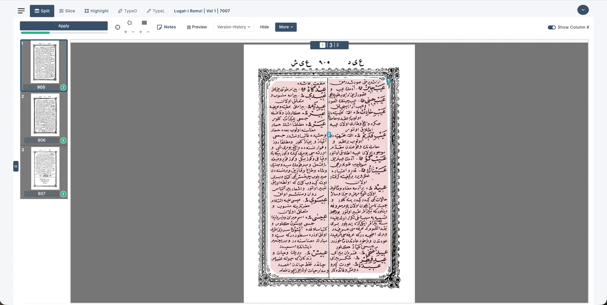
Sözlüğün normal düzeninde her sayfada iki sütun bulunsa bile özellikle harf geçişlerinde dört veya daha fazla sütunun bulunduğu sayfalarla karşılaşabiliyoruz. Böyle durumlarda önceden varsaydığımız sütun sayısına bağlı kalmıyoruz. Sayfanın gerçek yapısına göre ne kadar sütun gerekiyorsa o kadar sütun tanımlıyoruz.
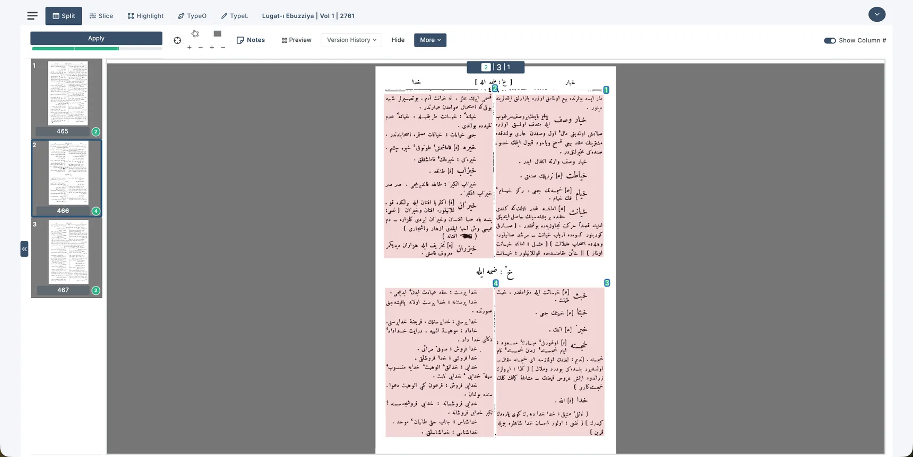
Sözlüğün bütün sayfalarında sütunları tanımladıktan sonra Dilimleme (Slice) aşamasına geçiyoruz. Bir sütun içerisinde sözlük maddelerini ve bu maddelerin açıklamalarını birbirlerinden dijital sınır çizgileriyle ayırıyoruz. Kâmûs-ı Türkî gibi yeterli boşluk bulunan sözlüklerde bu sınırları mümkün olduğunca düz, basamaksız ve eğimsiz çiziyoruz.
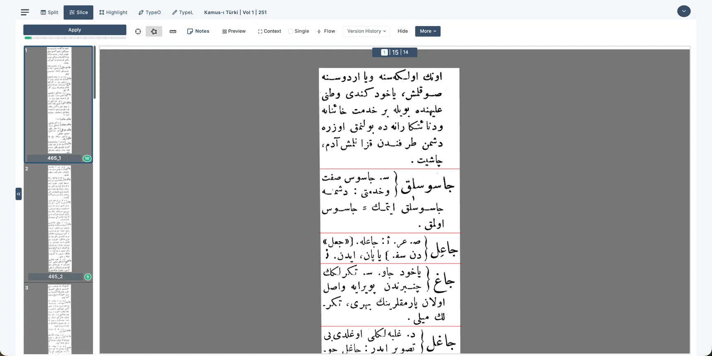
Lexicon (Redhouse) veya Lugat-ı Remzî gibi satır aralıklarının ve madde yerleşiminin daha sıkışık olduğu sözlüklerde ise basamaklı çizgiler kullanmak zorunda kalabiliyoruz. Basamak kullanmamız gerektiğinde bile sınırı mümkün olduğunca düz çizgiye yakın tutuyoruz. Çizgileri metne yakın geçiriyor fakat hiçbir zaman harflere değdirmiyoruz. Normal şartlarda yatay ve dikey basamaklar kullanıyoruz, alan çok fazla sıkışmışsa istisnai olarak diyagonal çizgilerden de yararlanıyoruz.
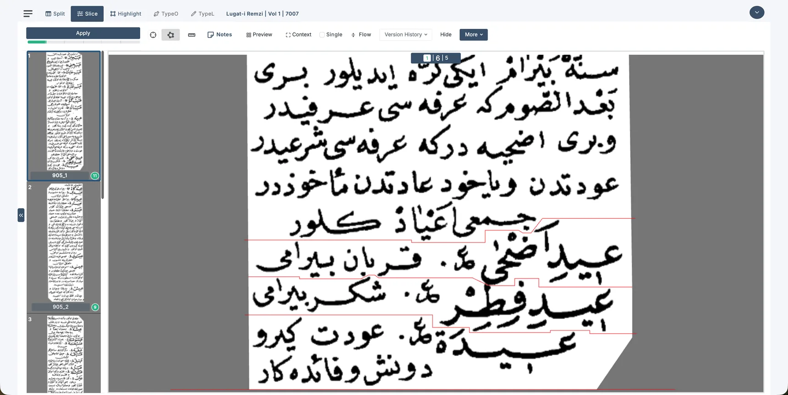
Dilimleme aşamasında yalnızca maddeleri birbirinden ayırmıyoruz. Aynı zamanda sütunlar arasındaki metin devamlılığını da tespit ediyoruz. Örneğin her sayfasında iki sütun bulunan üç sayfalık bir sette toplam altı sütun ortaya çıkıyor. Birinci sütundan ikinciye geçerken önceki sütunun sonunda başlayan bir maddenin devam edip etmediğini, yoksa yeni bir maddenin mi başladığını kaydediyoruz. Aynı kontrolü set içerisindeki bütün sütun geçişlerinde yapıyoruz. Ayrıca setin ilk sütununun bir önceki setin son sütunuyla, son sütununun ise bir sonraki setin ilk sütunuyla ilişkisini de belirliyoruz.
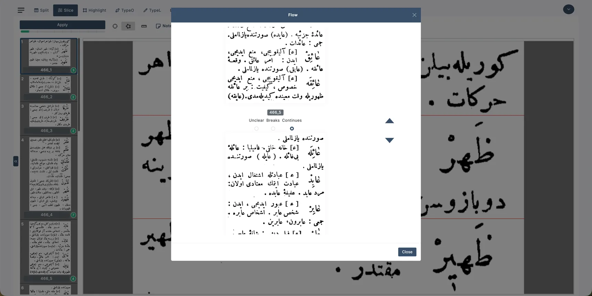
Bu bilgi sonraki İşaretleme aşamasında çok önemli hale geliyor. Bir sözlük maddesi birden fazla sütuna yayılmışsa o maddeye ait bütün görsel dilimleri tek bir grup içinde birleştirebiliyoruz.
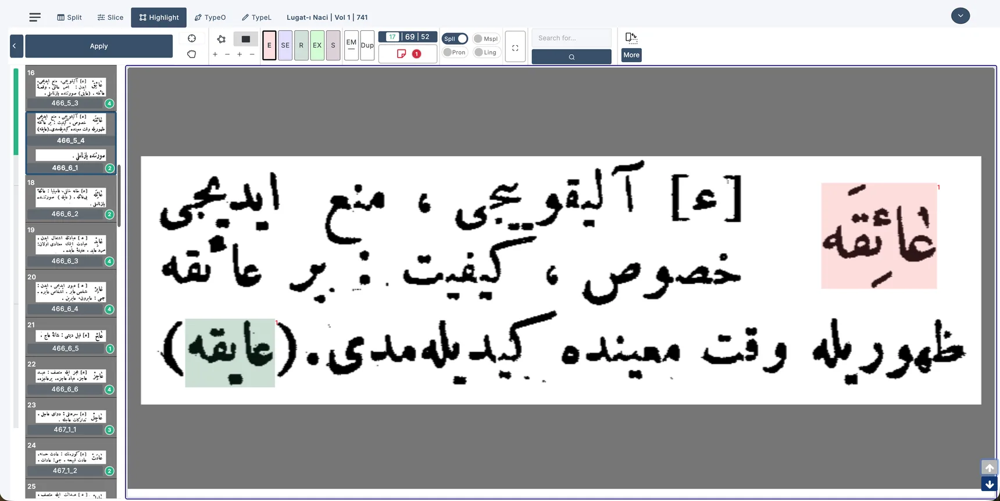
Sözlüğün tamamındaki Dilimleme işlemleri bittikten sonra İşaretleme aşamasına geçiyoruz. Bu aşamada sözlük maddesi içerisindeki araştırma bakımından anlamlı kelime ve kelime gruplarını metnin geri kalanından ayırıyor ve kategorize ediyoruz.
Öncelikle madde başlarını seçiyoruz. Bunun yanında, bir madde başına genellikle bir veya daha fazla kelime eklenerek oluşturulmuş ve sözlük maddesi içerisinde kendisine ait müstakil bir tanımı bulunan yapıları alt madde olarak seçiyoruz. Alt maddeler çoğu zaman bir kelime grubundan oluşuyor, fakat bazen tek kelimelik alt maddelerle de karşılaşıyoruz. Buradaki esas ölçüt, ilgili ifadenin ana maddenin tanımı içinde kendisine ait bağımsız bir tanım taşımasıdır.
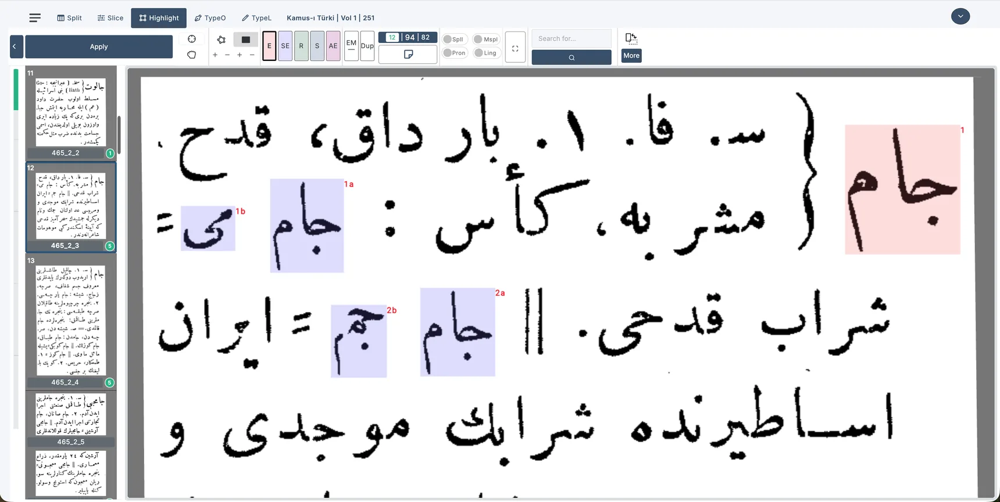
Madde içerisinde madde başıyla ilgili önemli dilbilimsel veya sözlüksel bilgiler veren kelimeleri ayrıca seçiyoruz. Bunlar arasında madde başının müennesi, müzekkeri, Çağatayca karşılığı, çoğulu, tekili veya eş anlamlısı gibi ifadeler bulunabiliyor. Bu birimler alt madde değil. Fakat madde başını anlamak ve madde başları arasında ilişki kurmak bakımından kritik oldukları için onları ayrı bir kategori altında işaretliyoruz.
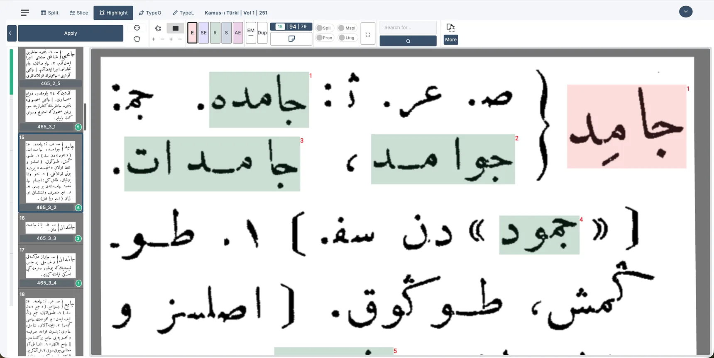
Bir alt madde veya kritik kavram olmadığı halde yazarın madde başının kullanımına örnek olarak verdiği kelime, kelime grubu veya cümleleri Örnek (Example) kategorisi içinde seçiyoruz.
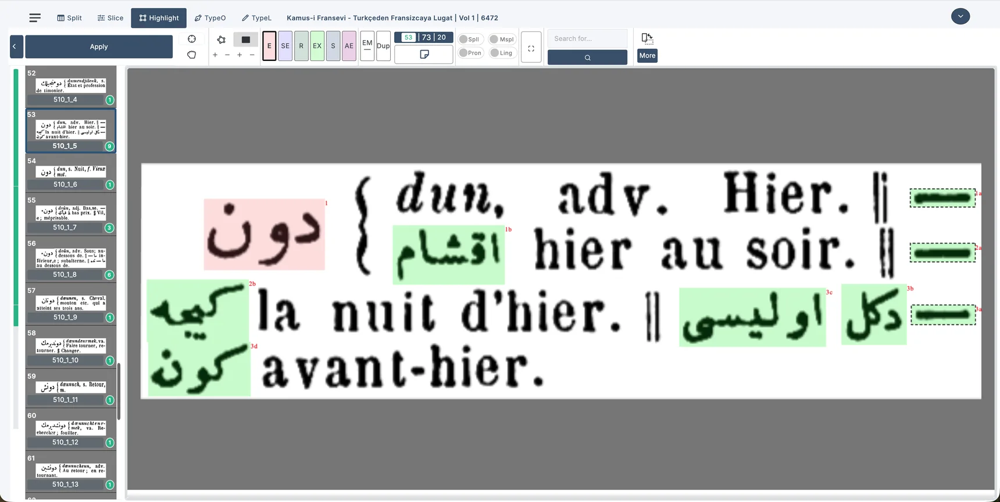
Yazarın okuyucuyu aynı sözlüğün başka bir maddesine gönderdiği ifadeleri de ayrı bir kategori içinde işaretliyoruz. Bu göndermelerin gösterimi sözlükten sözlüğe değişebiliyor. Örneğin Kâmûs-ı Türkî'de “bakıla” anlamında : با kısaltması kullanılabiliyor. Lehçe-i Osmanî'de Ahmet Vefik Paşa “nazar oluna” anlamında bakılacak kelimenin sonuna bir ن harfi koyabiliyor. Lexicon’da (Redhouse) See, Kâmûs-ı Fransevî’de ise V. (Voir) gibi farklı kısaltmalar tercih edebiliyor. Biçimleri farklı olsa da bunların sözlüksel işlevi aynı olduğu için sistemde aynı fonksiyonel kategori altında değerlendiriyoruz.
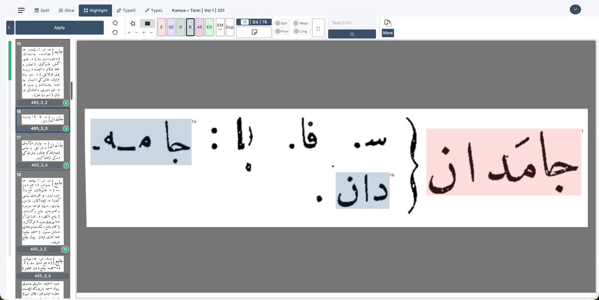
Özellikle Şemsettin Sami'nin sözlüklerinde görünüşte bir maddede birden fazla madde başı bulunan bazı yapılarla karşılaşıyoruz. Gerçekten de bazı maddelerde aynı anlamı taşıyan farklı imlalar yahut yakın biçimler tek tanım altında bir araya getirilebiliyor. Ancak bazı durumlarda yazar yan yana sıraladığı biçimlerin burada bağımsız madde başları olduğunu söylemiyor. Tam tersine, tercih ettiği imlanın sözlüğün başka bir yerinde bulunduğunu söylüyor ve okuyucuyu o maddeye gönderiyor. Böyle durumlarda bütün biçimleri aynı maddenin bağımsız madde başları olarak kaydetmek yanlış sonuç doğurur. Bu yüzden birinci değeri Madde Başı (Headword), diğerlerini ise Madde Başı Gibi (As Headword) kategorisinde işaretliyoruz.
Madde Başı Gibi ile ilgili değerin esasen başka bir dilimde bağımsız bir madde başı olarak bulunması gerektiğini ifade ediyoruz.
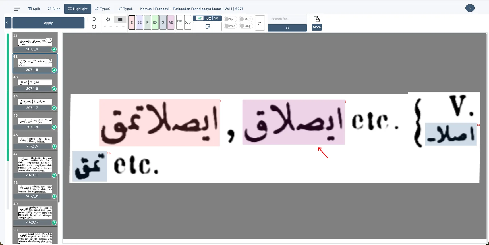
İşaretleme aşamasında kelime öbeklerini ve birleşik kelimeleri mümkün olduğunca blok halinde seçmiyoruz. Örneğin kelâm-ı câmi’ كلام جامع ibaresinde kelâm كلام ve câmi’ جامع kelimelerini ayrı ayrı işaretliyor ve birbirine bağlıyoruz. Bir kelime grubu o maddedeki ikinci alt madde başı ise bunlara örneğin 2a ve 2b gibi kimlik numaraları (ID) veriyoruz. Böylece bunların ikinci alt madde başının birinci ve ikinci parçaları olduğunu ayrıntılı biçimde kaydediyoruz.
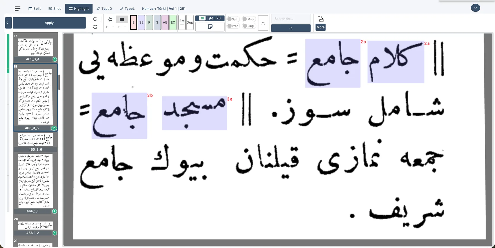
Aynı yöntemi bitişik yazılan bir bileşik kelimede de kullanabiliyoruz. Örneğin karagöz قرەكوز tek kelime halinde yazılmış olsa bile analitik çözümleme bakımından gerekli gördüğümüz için parçalarını ayrı ayrı seçip birbirine bağlıyoruz.
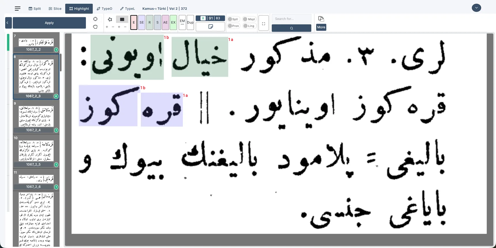
Ancak birleşik kelimelerin harfleri birleştirildiyse, o zaman bütünü tek parça halinde seçip analizi TypeO aşamasına bırakıyoruz. Aksi halde metnin yapısını bozmuş oluruz ki bu proje boyunca hassasiyetle takip ettiğimiz metodolojinin aksi yönünde hareket etmek olur.
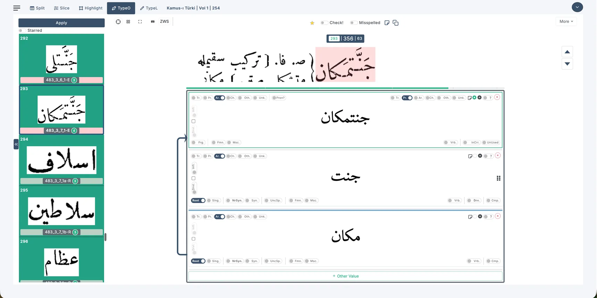
Yukarıda zikrettiğim gibi biz ek almamış birleşik kelimeleri oluşturan bileşen kelimeleri ayrı ayrı seçip birbirlerine bağlıyoruz. Fakat bazen birleşik kelimenin tamamının ek aldığı durumlarla farklı bir yöntem uyguluyoruz. Aşağıdaki örneğe birlikte bakalım:
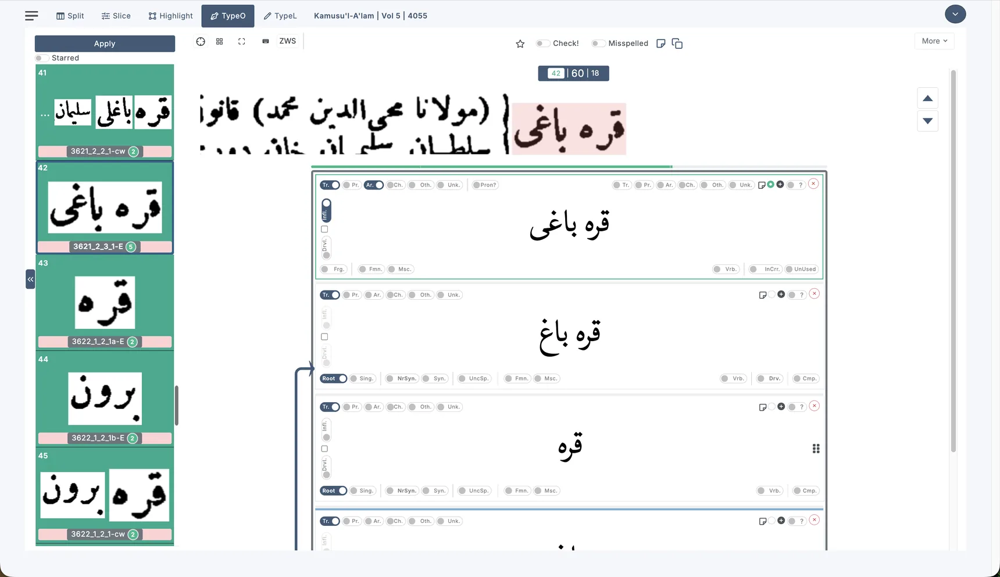
Bu örnekte, karabâğî قرە باغی kelimesindeki Arapça mensubiyet eki -i ی sade bağ باغ bileşenine gelmeyip, birleşik kelimenin tamamına geldiği için İşaretleme aşamasında birleşik kelimeyi ekiyle beraber tek parça olarak seçiyoruz. Aksi halde bâğî باغی kelimesi bu birleşik kelimenin bileşeniymiş gibi ortaya çıkar ve bu da önemli bir hataya sebep olur. Zira malum olduğu üzere isyan eden anlamında böyle bir Arapça kelime var ve fakat karabâğî قرە باغی ile semantik bir irtibatı yok.
Öte yandan böyle bir usul takip edilmediğinde anlamsız kelimelerin ortaya çıkabildiğini görüyoruz. Mesela ihlâsperverâne اخلصپرورانە örneğinde perverâne پرورانە gibi anlamsız bir kelime ortaya çıkıyor, zira buradaki Farsça -âne انە eki sadece perver پرور kelimesine eklenmiyor, ihlâsperver اخلصپرور birleşik kelimesinin tamamına ekleniyor. Hatalı kelime türetimlerinin ve yanlış anlamsal eşleşmelerin önüne geçmek için ek alan birleşik kelimeleri bölmeden, tek bir bütün olarak işaretlemeyi tercih ettik ve bu kuralı projenin genelinde tutarlı biçimde uyguladık.
Tarihi sözlüklerde sık sık birden fazla kelime grubunda ortak olan bir unsurun yalnızca bir defa yazıldığını görüyoruz. Yazar normal şartlarda ayrı ayrı yazması gereken birkaç ibarenin ortak ilk kelimesini bir kere yazıyor, daha sonra ikinci unsurları sıralıyor. Klasik OCR yaklaşımında metinde fiziksel olarak tekrar edilmeyen bu ortak unsur yalnızca bulunduğu yerde tanındığı için zımnen mevcut olan diğer kelime grupları dijital nüshada ortaya çıkmıyor. Böylece söz konusu ibarelerin arama sırasında bulunması da mümkün olmuyor. BuildLQ'da bağlamın açıkça gösterdiği bu ilişkileri ayrıca kaydediyoruz.
Örneğin, metinde önce nezâret-i celîle نظارت جلیلە tamlaması geçiyor ve ardından yalnızca behiyye بهیە ve aliyye علیە sıfatları zikrediliyorsa ve bağlamdan kastedilen tamlamaların nezâret-i celîle نظارت جلیلە, nezâret-i behiyye نظارت بهیە ve nezâret-i aliyye نظارت علیە olduğunu anlıyorsak tamlamanın ortak kelimesini, mesafe olarak uzakta bulunsa ve araya başka kelimeler girmiş olsa bile, ilgili kelimelere ayrı ayrı bağlıyoruz. Program bu çoklu ilişkileri otomatik ID'leme yoluyla muhafaza ediyor. ID'ler hem kelimelerin sırasını hem de aralarında birden fazla kelime bulunan parçalar arasındaki bağlantıyı koruyor. Böylece örneğin bir açık ve iki zımni yahut iki açık ve daha fazla zımni kelime grubunu birbirinden ayrı veri birimleri olarak kaydedebiliyor ve sonradan aranabilir hale getiriyoruz.
Bu yöntemle bir taraftan kaynak metni değiştirmeden muhafaza ediyor, diğer taraftan yazarın açıkça tekrar etmediği fakat bağlam içinde mevcut olan sözlüksel yapıyı dijital ortamda temsil ediyoruz.
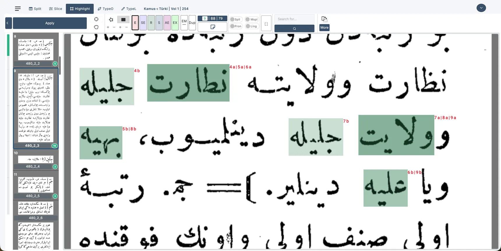
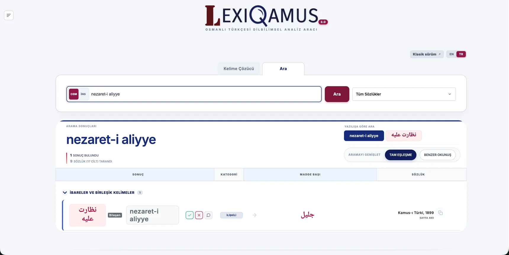
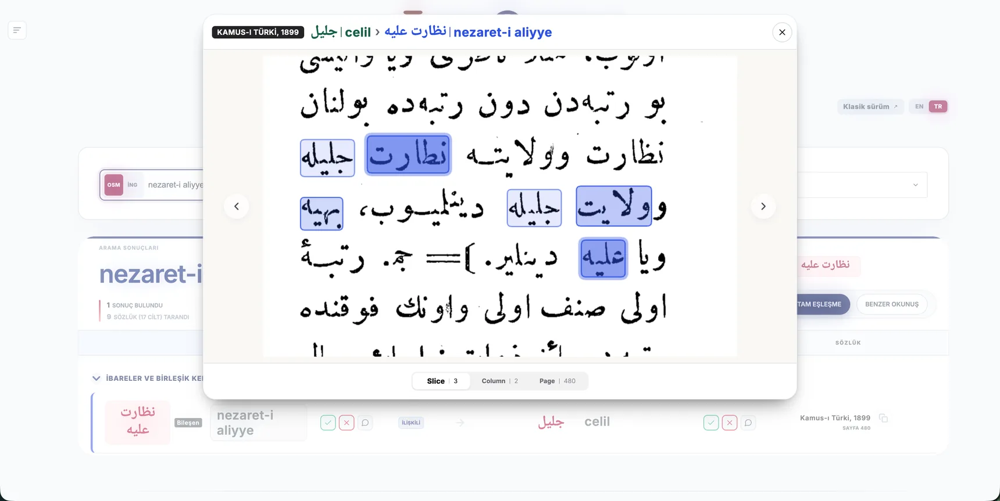
Metinlerde zaman zaman bir kelimenin kendisi yazılmadığı halde harflerinin veya oluşturulma biçiminin tarif edildiği durumlarla karşılaşıyoruz. Tarif edilen kelime madde başı bakımından önemliyse İşaretleme aşamasında ilgili yere boş bir alan çiziyoruz. Örneğin ilhâk الحاق maddesinde ikinci anlam olarak “ahirine getirmek, getirilmek” açıklaması verildikten sonra yazar, دلجو kelimesine gerektiğinde ی harfinin ilhak edildiğini söylüyor. Burada ikinci biçimi doğrudan yazmıyor, yalnızca kelimenin hangi unsurlardan nasıl meydana geldiğini tarif ediyor. Bu durumda tarif edilen ikinci biçim için görsel üzerinde boş bir alan oluşturuyoruz. Daha sonra kelimeyi Type-O aşamasında Osmanlı harfleriyle, Type-L aşamasında ise Latin harfleriyle yazıyoruz.
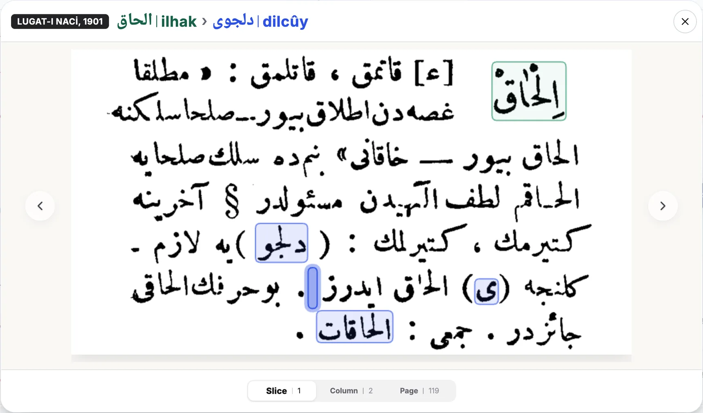
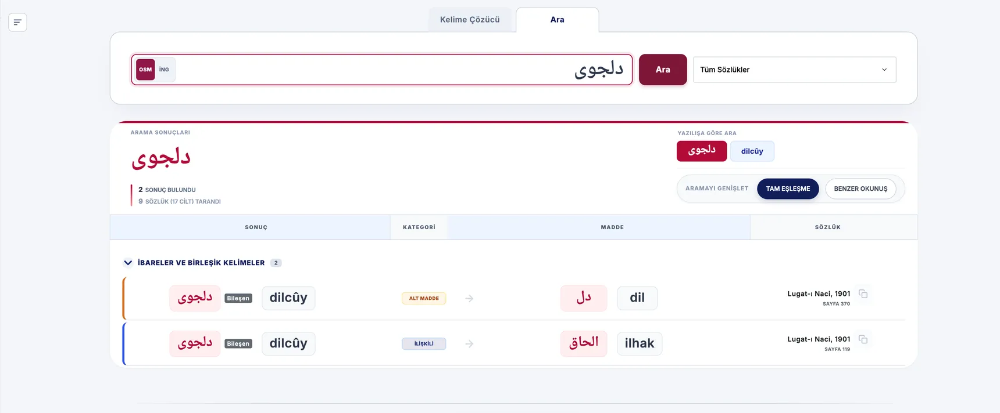
İşaretleme aşamasında seçtiğimiz bütün birimler tamamlandıktan sonra Type-O, yani Özgün Harflerle Yazma aşamasına geçiyoruz. Üç sayfalık örnek bir set üzerinden düşünürsek, bu üç sayfadan altı sütun, bu altı sütundan yaklaşık altmış sözlük maddesi ve bunların içinden madde başları, alt madde başları, kritik kavramlar, terimler ve kelime grupları dahil yaklaşık iki yüz seçili birim çıkabiliyor. Type-O aşamasında artık çalışma birimimiz İşaretleme aşamasında seçilmiş kelimeler ve kelime parçaları oluyor.
Seçtiğimiz kelimeleri önce OCR araçları ve yapay zeka yardımıyla okutuyoruz. Buradaki amacımız, makinanın zaten doğru okuyabildiği değerleri insanların baştan tekrar yazmak zorunda kalmasını engellemek ve gereksiz zaman kaybını azaltmak. Her seçili kelimenin altında Osmanlı harfli değeri gireceğimiz bir kart ve geniş bir giriş alanı bulunuyor. Bu alan OCR ile ortaya çıkan kelime ile otomatik olarak dolduruluyor, fakat doğrudan kaydedilmiyor. İlgili sette çalışan kişi OCR sonucunu kontrol ediyor. Değer doğruysa hiçbir şeye dokunmuyor. Hata varsa düzeltiyor. Kelime ekli, çoğul, birleşik veya başka biçimde analize ihtiyaç duyan bir yapıysa aynı aşamada morfolojik çözümlemesini de yapıyor.
Type-O aşamasındaki önemli ilkelerimizden biri, sözlük yazarının bir kelimenin dili hakkında verdiği bilgi ile bizim kelime içindeki dil unsurlarına ilişkin analizimizi birbirinden ayrı tutmak. Tarihi sözlük yazarlarının bir kısmı kelimenin aldığı eke bakarak kelimenin tamamını bir dile nispet edebiliyor. Örneğin eczâcı اجزاجی kelimesine Türkçe diyebiliyorlar. Biz ise kelimenin içindeki bütün dil unsurlarını ayrı ayrı kaydediyoruz. Dolayısıyla eczâcı اجزاجی gibi bir biçimde Arapça ve Türkçe unsurlar birlikte bulunuyorsa bizim analiz tarafımızda hem Arapça hem Türkçe etiketini açıyoruz. Yazar aynı kelimeyi Türkçe kabul etmişse bunu ayrıca yazar tarafındaki ilgili dil etiketini etkinleştirerek muhafaza ediyoruz. Burada yazarın sınıflandırmasına ‘yanlış’ demiyoruz. Yazarın değerlendirmesi ile bizim benimsediğimiz analitik sınıflandırmayı birbirinden ayırıyoruz.
Bu örnekte Farsça mûytâb مویتاب kelimesinin Türkçeye mûtâf موتاف olarak geçtiğini görüyoruz. Görüldüğü üzere Kâmûs-ı Türkî’de yazar kelimenin köken dilini Farsça olarak kaydediyor. Bu bilgiyi muhafaza etmek için kartın sağ tarafındaki dil etiketlerinden Farsçayı etkinleştiriyoruz. Ancak kelimenin imlası Türkçede dönüşüm geçirdiği için, artık yeni kelimede Türkçe dil unsuru da bulunması nedeniyle, sol tarafta, yani dil ile ilgili bizim görüşümüzü belirttiğimiz kısımda Farsça ve Türkçe dil etiketlerinin her ikisini birden etkinleştiriyoruz.
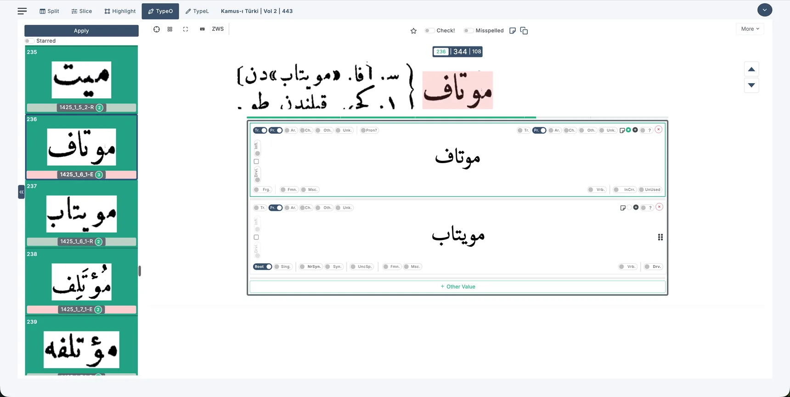
Kaynak görüntüde bir kelimenin yanlış yazıldığını düşünüyorsak bu durumu Yanlış İmla (Misspelled) olarak işaretliyoruz. İlk kartta görüntüde gerçekten bulunan biçimi muhafaza ediyor ve yanlış imla olarak etiketliyoruz. Sistem bunun altında ikinci bir kart oluşturuyor. Düzeltilmiş biçimi buraya yazıyor ve morfolojik ve dilbilimsel çözümlemeyi düzeltilmiş biçim üzerinden sürdürüyoruz. Buradaki yanlışlık iddiamızı yalnızca elimizdeki nüshaya, hatta gerektiğinde yalnızca kullandığımız dijital görüntüye münhasır tutuyoruz. Kelimenin müellif nüshasında veya başka bir baskıda da aynı şekilde yanlış olduğunu iddia etmiyoruz. Hata baskıdan, nüshadan veya dijitalleştirme sırasında kötü tarama yahut görüntü işleme işleminden kaynaklanmış olabilir. Elimizdeki görselde yer alan değerin ilk karttaki haliyle göründüğünü belirtiyor, doğru olduğunu düşündüğümüz yazımı ise altına ayrıca ekliyoruz. Böylece hem metnin orijinal imlasını hem de kendi yorumumuzla düzelttiğimiz şeklini ayrı ayrı kayıt altına almış oluyoruz.
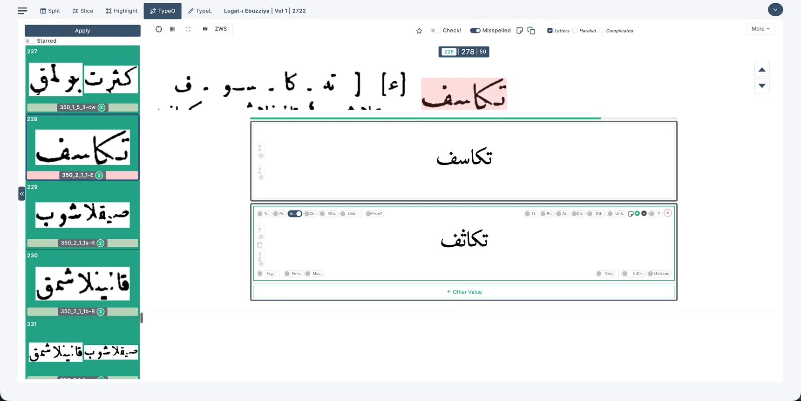
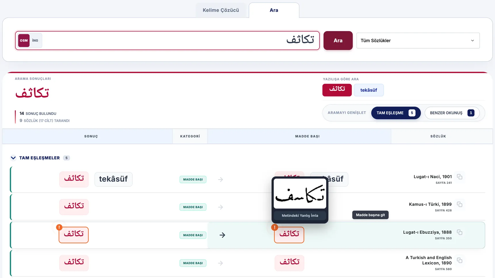
Yazım hatalarını tespit etmek, her zaman bir harfin açıkça yanlış yazılması kadar kolay olmayabilir. Örneğin Lugat-ı Nâcî'de karâr قرار maddebaşının altındaki karâryâb قرارياب alt madde başından sonra gelen ve "kararsız" şeklinde tanımlanan karar alt madde başıyla karşılaştığımızda, bu tanımdaki açık anlam çelişkisinden hareketle alt madde başınının aslında bî-karâr بیقرار olması gerektiğini anlıyoruz. Bu gibi durumlarda, görseldeki karâr قرار biçimini orijinal değer olarak koruyor, düzeltilmiş hali olan bî-karâr بیقرار ı ise ayrıca kaydediyoruz.
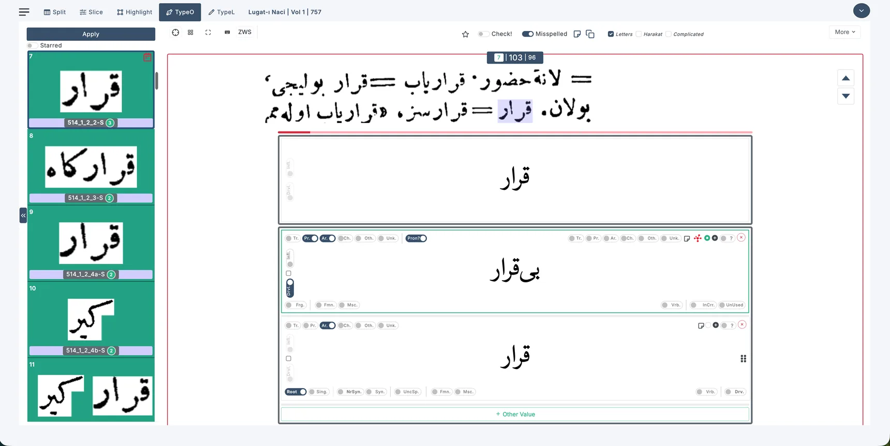
Ziyaretçi ön yüzde düzeltilmiş biçimi gördüğünde, imleci kelimenin üzerine getirdiğinde açılan ipucu kutucuğu sayesinde kelimenin kaynakta nasıl yazıldığını da görebiliyor. Ayrıca isterse ilgili özgün görsele tıklayarak kelimeyi önce sözlük maddesi içinde, ardından sütun içinde ve son olarak da sayfanın tamamı içinde görüntüleyebiliyor. Böylece düzeltilmiş veya analiz edilmiş bir değerden hareketle adım adım kaynak görüntüdeki özgün bağlama geri dönebiliyor.
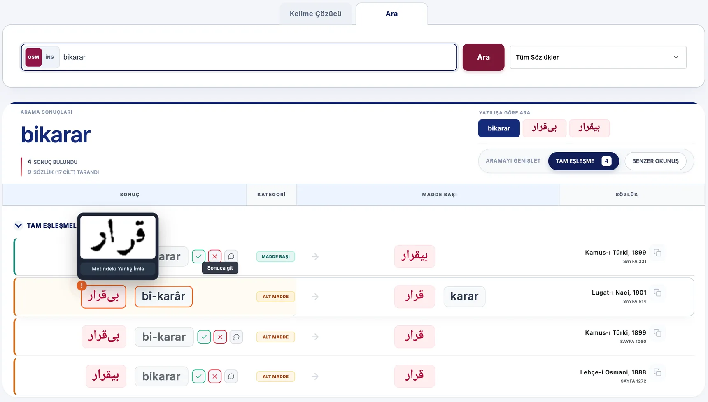
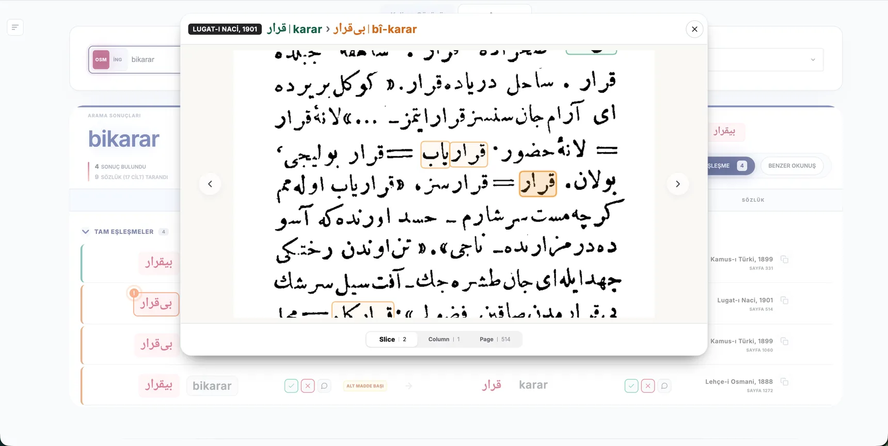
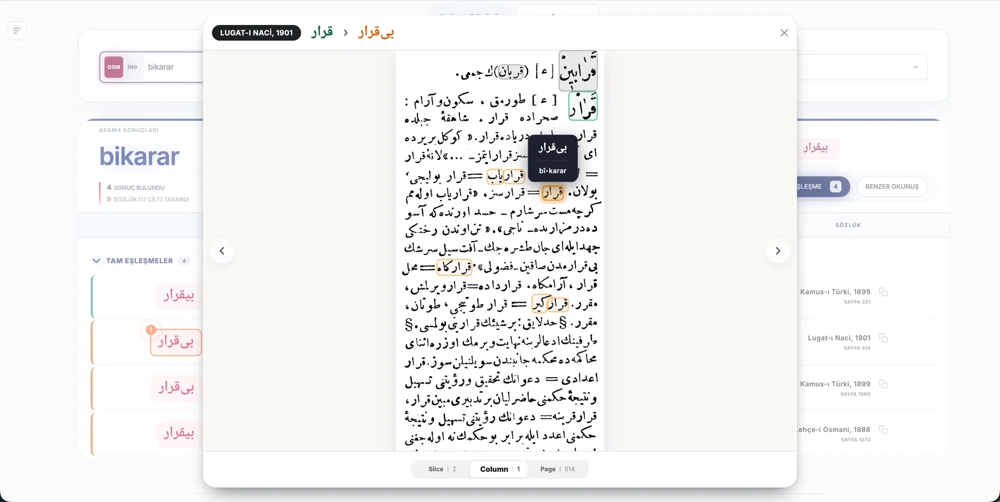
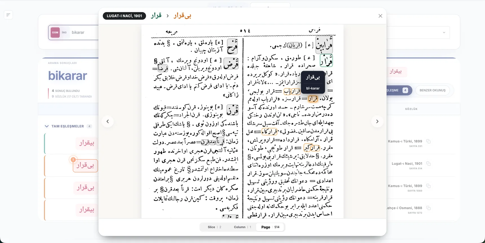
Öte yandan, yanlış imla olarak işaretlediğimiz değerlerde, yanlışlığın türünü de ayrıca kaydediyoruz. Bunun için Yanlış Harf (Letters), Yanlış Hareke (Harakat) ve birden fazla unsurun birlikte problemli olduğu durumlar için Karmaşık Hata (Complicated) gibi kategoriler kullanıyoruz. Böylece yalnızca bir imlanın hatalı olduğunu değil, hatanın hangi düzeyde ve ne türde olduğunu da veri tabanında muhafaza ediyoruz.
Bir kelimeyi analiz ederken eklerini aşama aşama ayırıyor ve ortaya çıkan analitik değerleri ayrı kartlar halinde kaydediyoruz. Bu kartlardan kelimenin sözlüksel bakımdan esas alınacak biçimini Ana Değer (Primary Value) olarak belirliyoruz. Ana Değer olan kart sistemde yeşil çerçeveyle gösteriliyor.
Yapım ekiyle oluşmuş bağımsız bir kelimede, yapımlı biçimin kendisini Ana Değer olarak seçiyoruz. İlk örnekte hulûskârlık خلوصکارلق yapımlı bir kelime olduğu için yeşil çerçeveli üst kartı Ana Değer olarak belirledikten sonra hulûskâr خلوصکار ve daha sonra hulûs خلوص köklerine kadar iniyoruz.
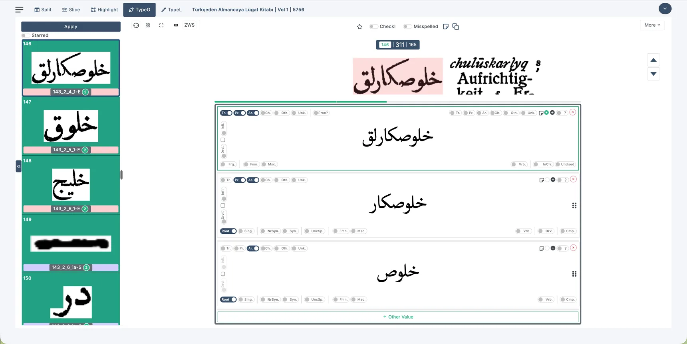
Buna karşılık üstteki biçim yalnızca çekimli bir formsa Ana Değer olarak ek almamış temel biçimi seçiyoruz. Mesela aşağıdaki örnekte erbaadan اربعهدن çekimli biçim. Çekim eki kaldırıldığında ulaştığımız erbaa اربعه kökü ise yeşil çerçeveyle gösterilen Ana Değer olarak ortaya çıkıyor. Böylece sistemde yalnızca kelimenin kök ve ek ilişkilerini değil, analiz zincirinin hangi seviyesinin esas sözlüksel değer olduğunu da açık biçimde kaydediyoruz.
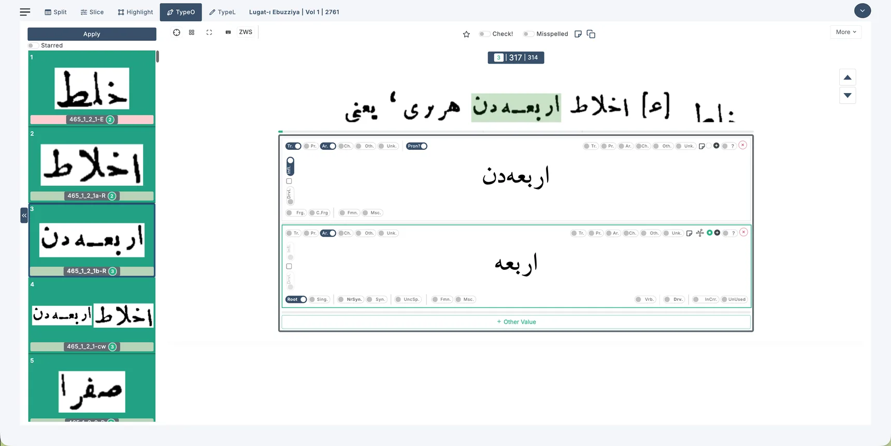
Bazı kelimeler morfolojik olarak çekimli olmayı sürdürdüğü halde sözlük yazarı tarafından bağımsız bir madde olarak ele alınıyor ve kendilerine ayrıca anlam veriliyor. Biz bu biçimlere Sözlükselleşmiş Çekimli Biçimler diyoruz.1 Civârında جوارندە kelimesi bu duruma güzel bir örnek. Bu ve benzeri kelimeler türemiş kelimelerden ayrılıyor. Mesela kalemlik قلملك kelimesi aldığı -lik لك yapım eki ile kalem قلم kelimesinden ayrışıyor ve dolayısıyla sözlükte kendisine müstakil yer ayrılması ve bağımsız anlam verilmesi olağan. Fakat civârında جوارندە sözcüğünde ilginç olan durum şu: Kelime çekimli olmasına rağmen, yazar sözlükselleştirmeyi tercih etmiş. Bu tür durumlarda ilgili kart üzerindeki Çekimli (Inflected) etiketini açıyoruz ve genel uygulamamızın aksine çekimli kelimeyi Ana Değer olarak belirliyoruz. Böylece bu değerleri sonuç listesinde Sözlükselleşmiş Çekimli Biçimler (Lexicalized Inflected Forms) altında gösterebiliyoruz.
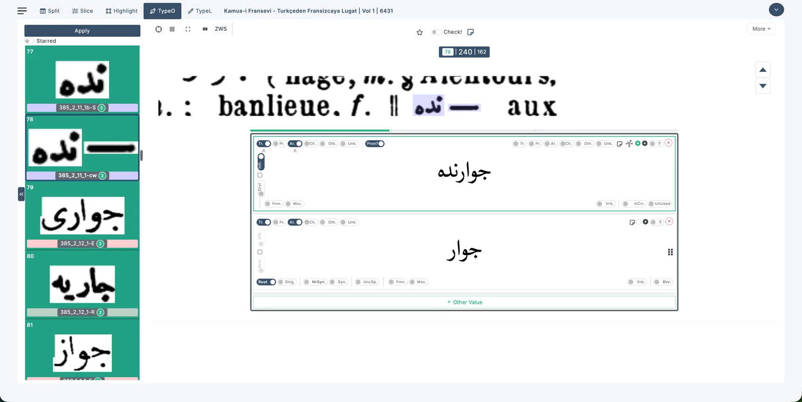
Türkçedeki klasik çekim eki / yapım eki ikiliğinin, özellikle yapım kategorisi bakımından biraz fazla genel olduğunu ve ekli kelimeler arasındaki önemli seviye farklarını kuşatamadığını düşünüyorum. Bu yüzden analizimizde çekimi kendi içinde üç kademeye ayıran daha ayrıntılı bir sınıflandırma kullanmayı tercih ettim.
İlk seviyede yalnızca sentaktik bağlam dolayısıyla ortaya çıkan biçimler var. İsmin hal ekleriyle meydana gelen kalemi, kalemden, kalemimi gibi biçimleri bu seviyede değerlendiriyoruz. Bunlara Pür Çekim (Contextual Inflection) diyoruz.
Bunun üzerindeki seviyede çoğul, cinsiyet, olumsuzluk gibi kelimenin içsel gramatik özellikleriyle ilgili çekimler bulunuyor. ağaç → ağaçlar, nebî → enbiyâ2, kerîm → kerîme, çıkmak → çıkmamak gibi ilişkileri bu gruba alıyoruz. Bu seviyeyi İçsel Çekim (Inherent Inflection) olarak düşünüyoruz. 3
Üçüncü seviyede kelimenin türünü değiştiren fakat henüz mutlaka bağımsız bir sözlük birimi üretmeyen çekimler var. Bir fiilin yap → yaparak, yapan veya oku → okuduğu gibi biçimlerini bu seviyede değerlendiriyoruz. Bu seviyeye Tür Değiştirici Çekim (Transpositional Inflection) diyoruz. 4
Bunun üzerinde ise artık yeni bir sözlüksel birim oluşturan yapım ilişkileri geliyor. Süt → sütçü veya ser → sergi gibi örnekleri bu grupta değerlendiriyoruz. Buradaki temel ölçüt, ortaya çıkan biçimin yalnızca gramatik bir işlev kazanması değil, yeni ve bağımsız bir sözlüksel anlam taşımasıdır. Bu nedenle aynı biçim, kullanımına göre farklı kategorilerde değerlendirilebilir. Örneğin yazma, yazmak fiilinin isimleşmiş bir biçimi olarak kullanıldığında Tür Değiştirici Çekim kapsamında düşünülebilir; buna karşılık ‘el yazması’ anlamındaki sözlükselleşmiş yazma, artık bağımsız bir sözlük birimi olduğu için Yapım kategorisinde yer alır. Benzer şekilde, bir işlemi ifade eden ‘dondurma’ ile bir yiyecek adı olarak kullanılan ‘dondurma’yı da aynı morfolojik kategoride değerlendirmiyoruz.
Bazı kelimelerin çözümlemesi çok kademeli olabiliyor. Örneğin giyinti كییندی kelimesinde önce giyin كیین, ardından giy كیی seviyesine iniyoruz. Giyinti كییندی yapım ekiyle oluştuğu için onu Ana Değer olarak işaretliyoruz. Giyin كیین i de ayrıca yapım ilişkisi içinde değerlendiriyoruz. Son seviyedeki giy كیی Türkçe bir fiil olduğu için Fiil (Verb) etiketini açıyoruz.
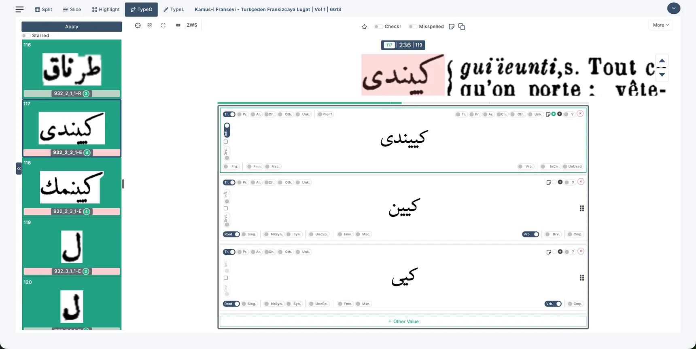
Kehrubâiyet كهربائیت gibi bir kelimede ise çözümleme birden fazla dil unsurunun ve birden fazla ekin ayrılmasıyla uzun bir zincire dönüşebiliyor. İlk biçimde Arapça, Farsça ve Türkçe unsurlar birlikte bulunabiliyor. Açık te ت biçiminden kapalı te ة biçime geçtiğimizde Türkçe unsur ortadan kalkıyor. Ardından Arapça unsur oluşturan eki ayırarak Farsça seviyeye, daha sonra Farsça mensubiyet ekini ayırarak kehrubâ كهربا biçimine iniyoruz.
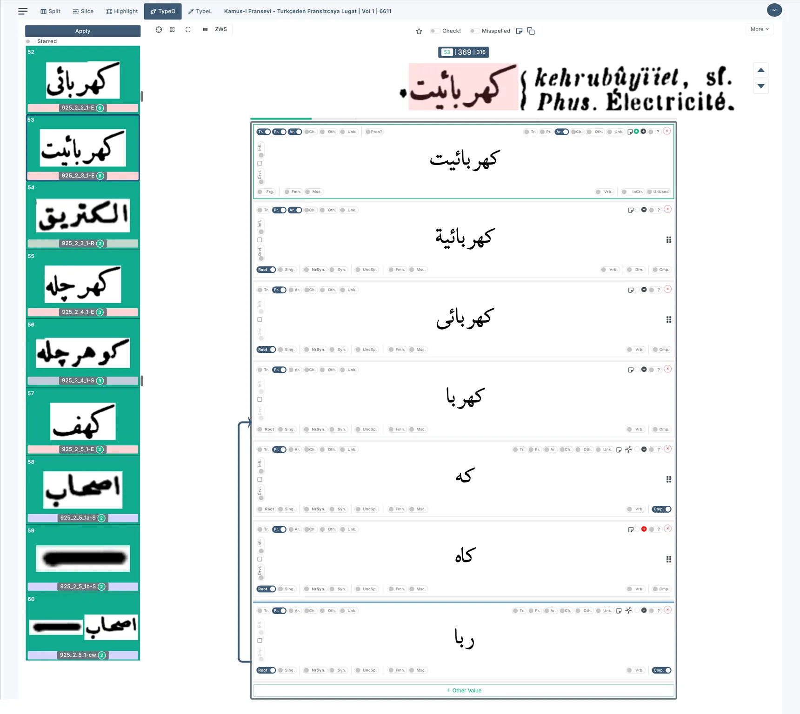
Sonra kelimeyi keh كه ve rubâ ربا bileşenlerine ayırıyoruz. keh كه için de daha alt bir kâh كاه değeri olduğu için bu ilişkiyi ayrıca kaydediyoruz.
Bir kelime satır sonunda tamamlanamadığı için bir kısmı satırın sonunda, diğer kısmı sonraki satırın başında yazılmış olabiliyor. İki parça birlikte tek bir kelime oluşturuyorsa bunları İşaretleme aşamasında Parça (Fragment) olarak işaretliyor ve örneğin 1a–1b biçiminde aynı kelimenin parçaları olarak ID'liyoruz. Type-O aşamasında bu parçaları bir araya getiriyor ve tam kelimeyi oluşturuyoruz.
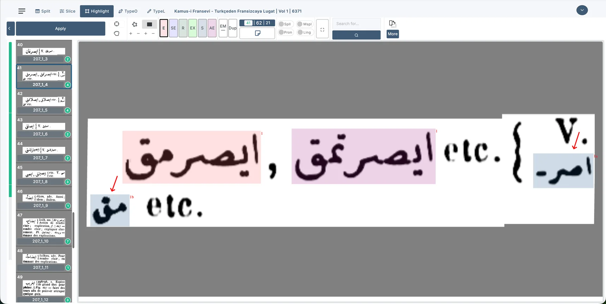
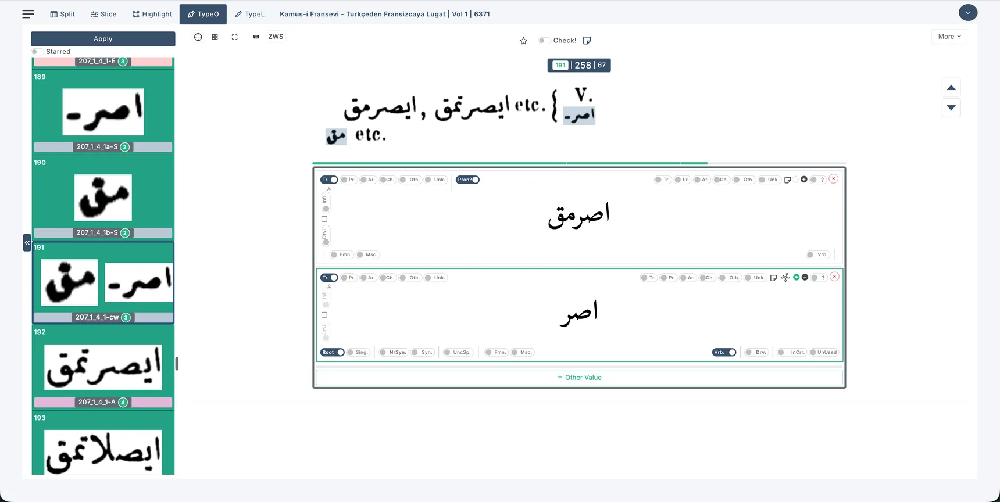
Özellikle Lexicon (Redhouse) ve Kâmûs-ı Fransevî gibi sözlüklerde yazarın bir tanım içinde madde başını tekrar etmemek için onun yerine uzun çizgi (em dash) kullandığını görüyoruz. Bu işaret madde başının tamamının yerine geçebiliyor. Ardından bir ek ve başka bir kelime geliyor ve sonuçta yeni bir kelime grubu oluşuyor. Bu durumda kelime grubunun parçalarını Bileşik Parça (Compound Fragment) olarak seçiyoruz. Bir Bileşik Parça tam bir kelime, Önek (Prefix), Sonek (Suffix), İçek (Infix) veya Anlamsız (Meaningless) olarak değerlendirilebiliyor. Uzun çizgi madde başının tamamının yerini tuttuğu için onu tam kelime kabul ediyoruz. Önek, sonek ve içek gibi eklerin çekim ya da yapım niteliği taşıyıp taşımadığı bilgisini de ayrıca kaydediyoruz.
Daha sonra bu parçaları bir araya getirip tam ekli kelimeyi oluşturuyor, yeni seviyenin dil etiketlerini tanımlıyor ve kelimeyi her zamanki morfolojik çözümleme sürecine alıyoruz.
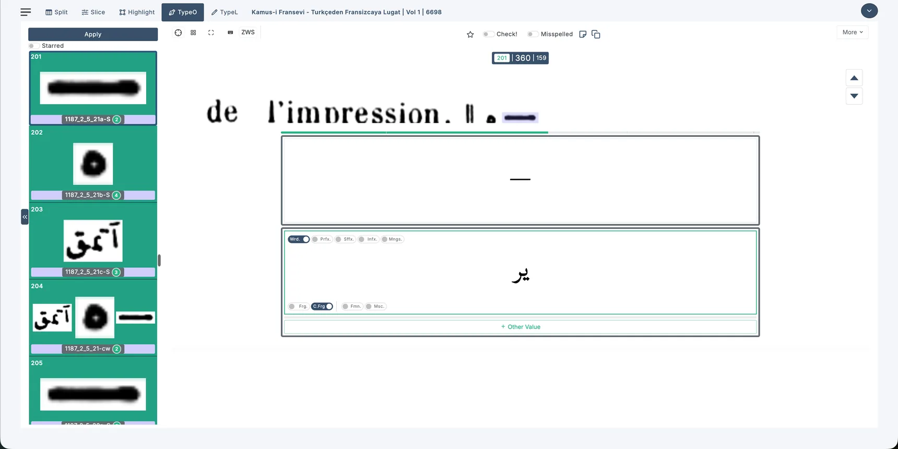
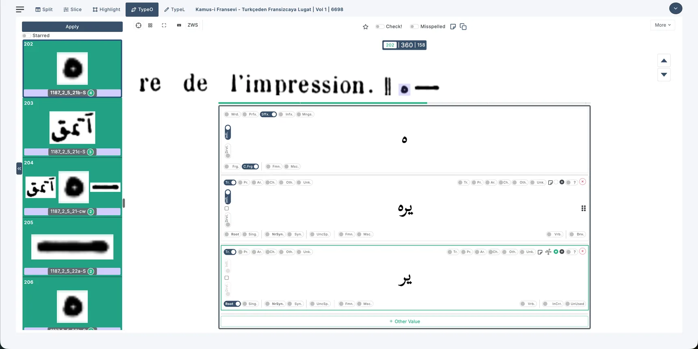
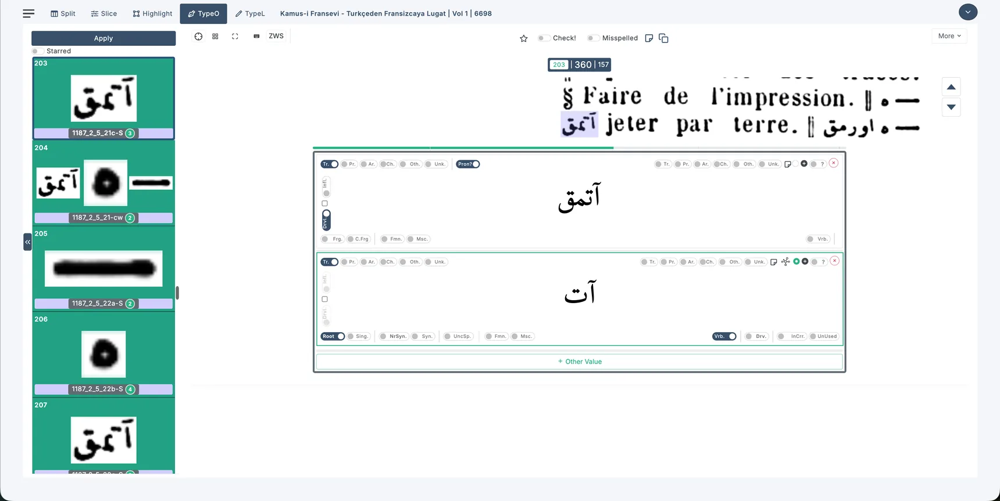
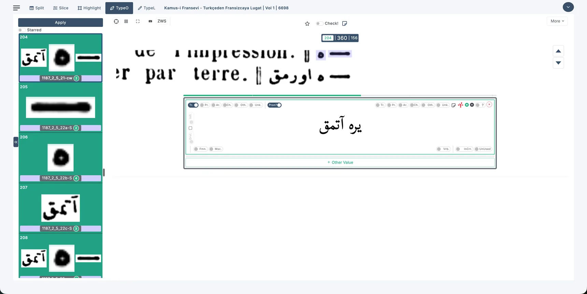
Birleşik kelimelerde önce kelimenin çekim eklerini ayırıyor, ardından birleşik kelimenin bileşenlerine iniyor ve her bileşeni ayrıca çözümlüyoruz. Örneğin birbirine بربرینە biçiminde önce çekim ekini ayırarak birbiri بربری seviyesine iniyoruz. Ardından bunu bir بر ve biri بری şeklinde bileşenlerine ayırıyoruz. İkinci bileşenin ekini de kaldırdığımızda iki temel bir بر değeri ortaya çıkıyor. Böylece bileşik kelimenin iki bileşenini veri tabanında açık biçimde temsil edebilmiş oluyoruz.
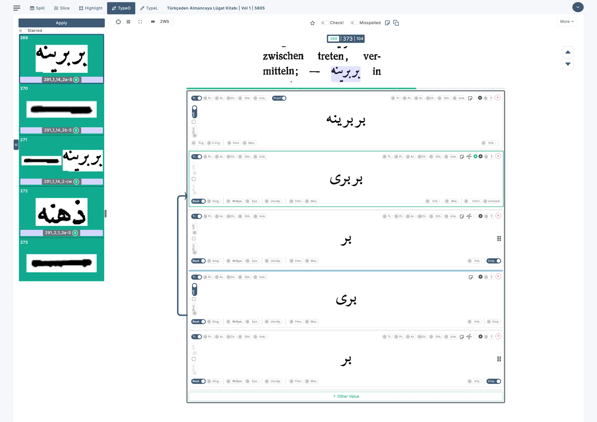
İhlâsperverâne اخلاصپرورانه örneğinde ise ilk seviyede Arapça ve Farsça unsurlar birlikte bulunuyor. İhlâsperverâne اخلاصپرورانه den ihlâsperver اخلاصپرور e, ardından ihlâs اخلاص ve perver پرور bileşenlerine iniyor ve bileşenleri Kök olarak etiketliyoruz. Sistemde varsayılan olarak bir alt kart doğrudan bir üstündeki karta bağlanıyor. Fakat bir bileşeni hemen üzerindeki karta değil daha yukarıdaki bileşik değere bağlamamız gerekiyorsa ilgili kartları seçerek ilişkiyi manuel olarak değiştiriyoruz ve ok aracılığıyla doğru üst seviyeye bağlıyoruz.
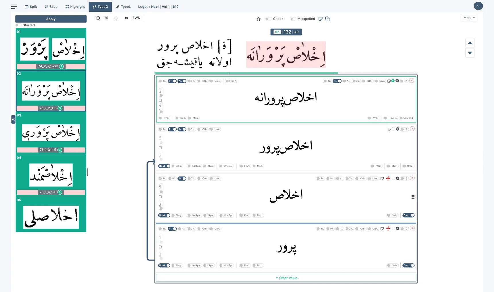
Böylece ihlâsperver اخلاصپرور veya ihlâsperverâne اخلاصپرورانه gibi değerleri ihlâs اخلاص aramasında bileşik yapılar içinde listeleyebiliyoruz.
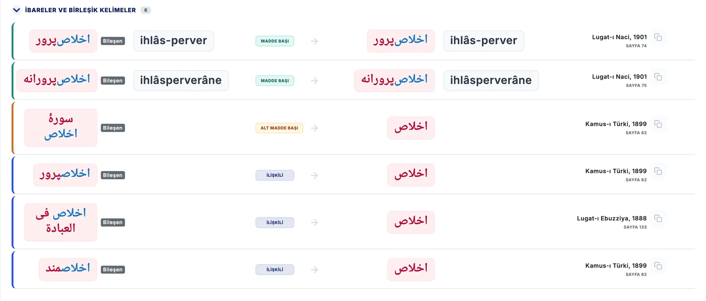
Bir kelimenin altındaki analitik değer çoğu zaman üstteki kelimenin kökü oluyor. Fakat ilişki bununla sınırlı değil. Alt değer üst kelimenin tekili, eş anlamlısı, yakın eş anlamlısı veya başka bir ilişkili biçimi de olabilir. Ayrıca Şüpheli İmla (Uncertain Spelling), müennes ve müzekker gibi etiketleri de kullanıyoruz. Örneğin üflemek اوفلمك benzeri bir kelimenin analizinde üstteki biçimde görünmeyen, fakat kök veya emir biçiminde gerekli olduğunu düşündüğümüz bir harf alt değerde yeniden ortaya çıkıyorsa – üfle اوفلە kelimesinde ه harfi ilave olur – bu alt biçimi Şüpheli İmla olarak etiketliyoruz.
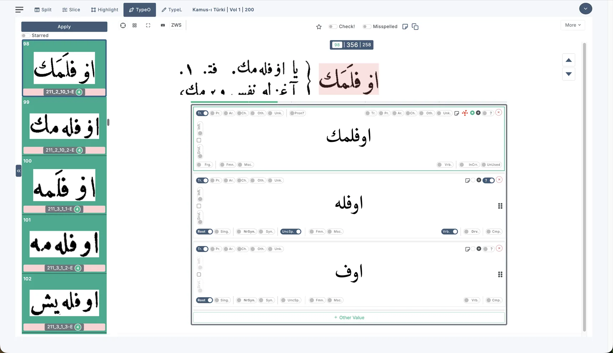
Benzer şekilde merhûm مرحوم → merhûme مرحومە veya cemîle جمیل → cemîl جمیلە gibi örneklerde, ilgili kelimeleri sırasıyla Müennes (Feminine) ve Müzekker (Masculine) olarak işaretliyoruz.
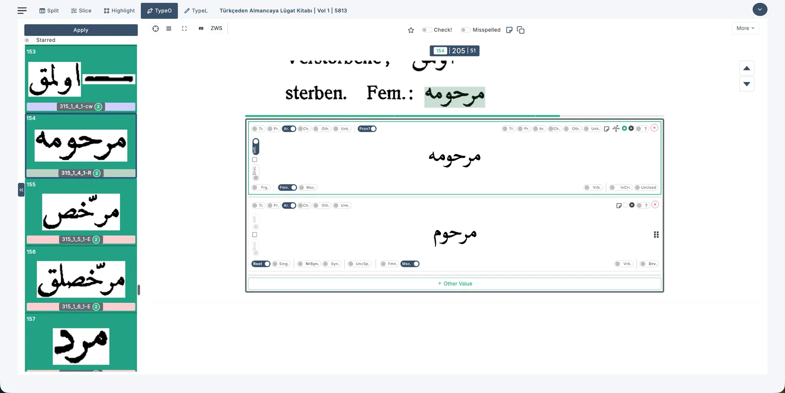
-me مە / -ma مە veya -mek مك / -mak مق ekleriyle kaydedilmiş fiillerde bu ekleri kaldırarak fiilin temel biçimine iniyoruz ve bu değeri Fiil etiketiyle işaretliyoruz. Aynı yaklaşımı başka çekimli fiil biçimlerinde de kullanıyoruz. Geldiğini, gelmiş, gelmeyeceğini veya gelmeyebileceğini gibi biçimleri analiz ettiğimizde çözümlemenin en alt kademesinde gel köküne ulaşıyoruz. Amacımız aynı fiilin farklı çekimli biçimlerini emir kipindeki temel fiil biçimi etrafında bir araya getirebilmek.
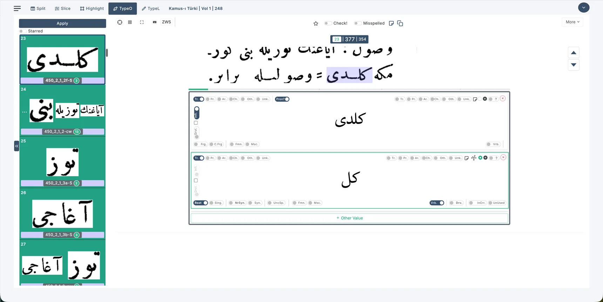
Arapça ve Farsça dışındaki dillerden Türkçeye geçmiş kelimeleri Type-O seviyesinde genel olarak Diğer (Other) etiketiyle kaydediyoruz. Arapça veya Farsçadan geçmiş kelimelerde ise yazı değişikliği olup olmadığına bakıyoruz. Örneğin kâdir قادر kelimesi Arapçada ve Osmanlı Türkçesinde aynı temel imlayla yazılıyorsa yalnızca Arapça etiketini ekliyoruz. Buna karşılık devlet دولت → دولۃ, şevket شوكت → شوكۃ, ümmet امت → امۃ veya millet ملت → ملۃ gibi kelimelerde Arapça asılda bulunan kapalı te ة Türkçe yazımda açık te ت ile gösteriliyor. Benzer şekilde imzâ امضا → امضاء, duâ دعا → دعاء ve ricâ رجا → رجاء gibi kelimelerde Arapça biçimde bulunan hemze, Osmanlı Türkçesindeki kullanımda düşebiliyor.
Bu tür durumlarda önce Türkçede kullanılan biçimi kaydediyor ve hem Türkçe hem Arapça dil unsurunu işaretliyoruz. Altına ise Arapçadaki meşru imlayı, örneğin kapalı te’li veya hemzeli biçimi, ayrıca yazıyoruz.
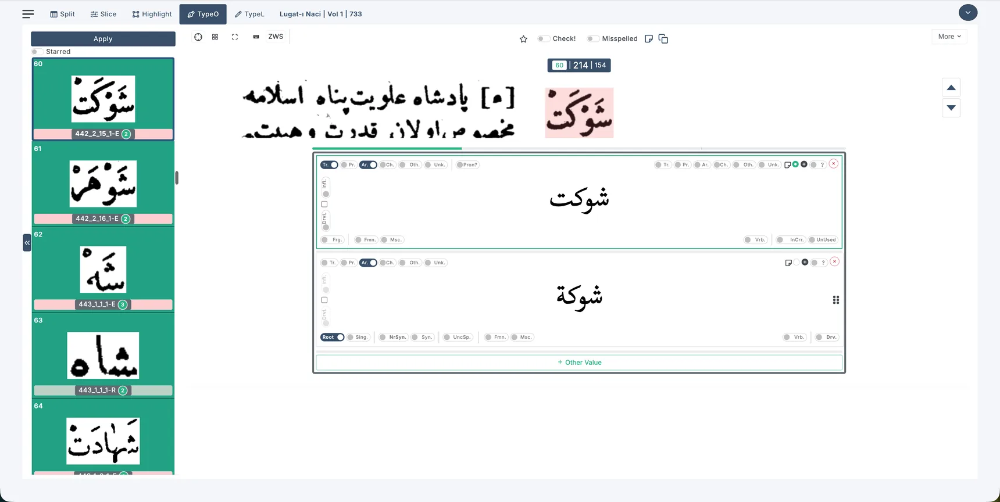
Buna karşılık yalnızca ses değişikliği varsa Type-O aşamasında ayrıca Türkçe dil etiketini açmıyoruz. Örneğin Farsça cüvân جوان dan Türkçe civan جوان telaffuzuna geçiş gibi ses farklılıklarını Type-L aşamasında ayrıştırıyoruz.
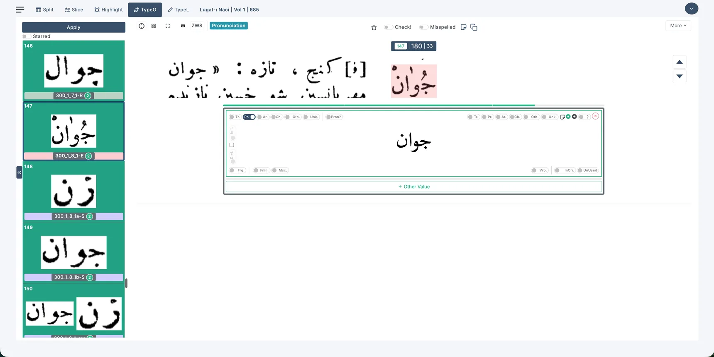
Türkçe, Farsça ve Arapçayı sistemde temel dil kategorileri olarak tutuyoruz. Kâmûs-ı Türkî'de yoğun Çağatayca referansı bulunduğu için Çağataycayı da ayrıca müstakil bir dil kategorisi olarak tanımladık. Bunların dışındaki dilleri genel olarak Diğer altında değerlendiriyoruz. Ayrıca Bilinmiyor (Unknown) etiketini de kullanıyoruz. Bilinmiyor etiketiyle “bu kelimenin dilini bilmiyoruz” demiyoruz. Bu etiketi, kelimenin köken dilinin bilinmediğini ifade etmek için kullanıyoruz. Bu görüş yazara aitse yazar tarafında, bize aitse proje tarafında işaretliyoruz.
Yazarın köken dilini bilinmeyen olarak kaydettiği iki kelime örneği. İlkinde “aslı meçhul”, ikincisinde ise “aslı anlaşılamadı” ifadesi kullanılmış.
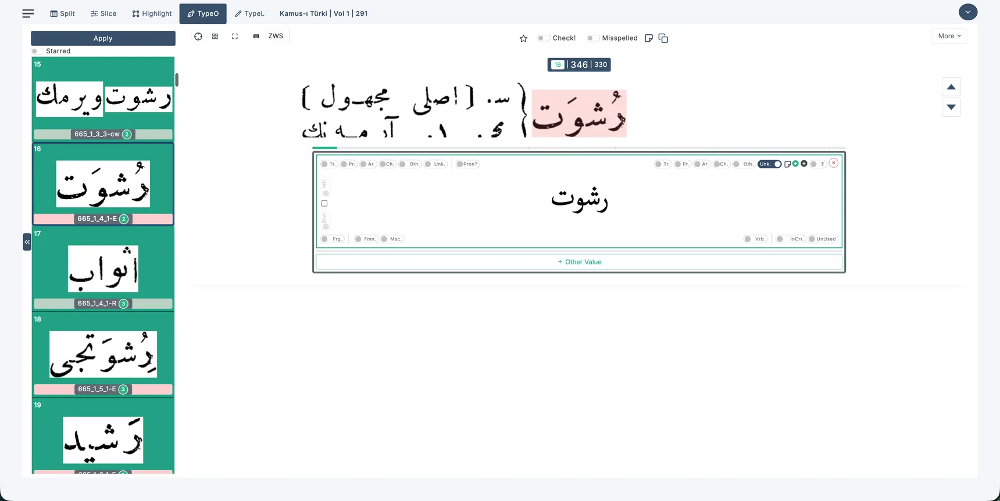
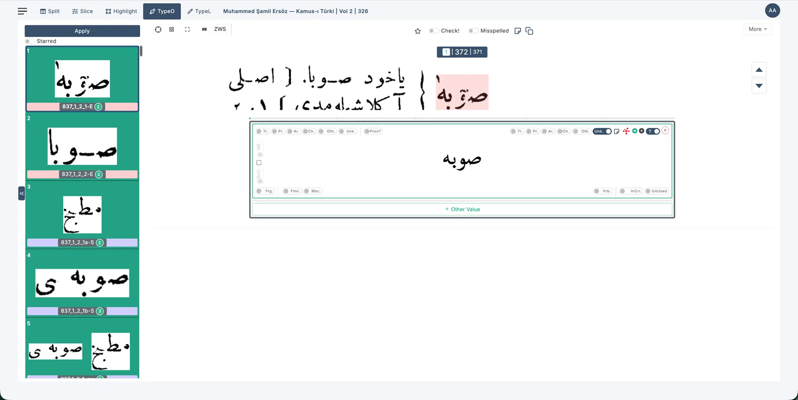
Bizim köken dilini belirleyemediğimiz bir kelime örneği:
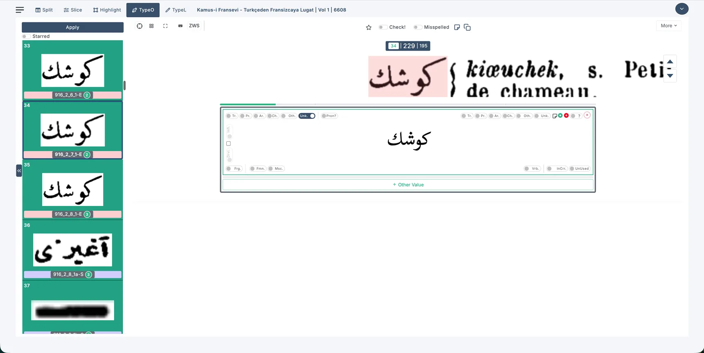
Bir kelimenin çözümlemesinde dış kaynaklardan yararlandıysak bu kaynakları ilgili kart üzerinde ayrıca kaydediyoruz. Özellikle Nişanyan, Kubbealtı ve başta Lexicon (Redhouse) ile Kâmûs-ı Türkî olmak üzere muteber çevrimiçi veya basılı Osmanlı sözlüklerinden yararlanıyoruz. Gerektiğinde kaynak bağlantısını, sayfa numarasını ve açıklayıcı notu da ekliyoruz.
Örneğin çağdaş Türkçede kullanımda bulunan besle بسلە biçiminden besi بسی köküne iniyorsak bu analizi mutlaka bir kaynağa dayandırıyoruz. Çünkü -le لە ekini çıkardığımızda ortaya çıkan kelime bes بس, ki bu kelime bugün dolaşımda ve kullanımda değil. besi بسی kökü ise yine ilave bilgi gerektiriyor, çünkü eksiz halinin, yani bes بس in, kök olma ihtimali var. Bu tür durumlarda temelsiz yorumlarda bulunmaktan muhakkak surette kaçınıyoruz. Ya muteber bir kaynağa referans yapıyoruz, ya da o köke inmiyoruz.
Type-O kartlarında Yorumlu Telaffuz (Pron?) şeklinde bir etiket de kullanıyoruz. Kelimenin telaffuzu kaynak metinde açıkça belirtilmişse bu etiketi açmıyoruz. Buna karşılık, kelimede hareke veya başka açık bir telaffuz göstergesi yoksa ve değeri kendi Osmanlıca bilgimizle okuyorsak, okunuştan son derece emin olsak bile bu etiketi açıyoruz. Bu etiketle telaffuzda az veya çok bir yorum bulunduğunu ifade etmiş oluyoruz.
Öte yandan, metindeki harekeler telaffuzu yeterince gösteriyorsa gereksiz bir şüpheciliğe yönelmiyoruz. Örneğin, Kâmûs-ı Türkî’de ve Lugat-ı Nâcî’de sözlük yazarları bazı kelimelerde okutucusu olmayan ünsüzlerin nasıl okunacağını açıkça tarif ediyor ve madde başlarının harekelerini koyuyor. Böyle bir durumda kaynakta verilen işaretlere göre yaptığımız okumayı yorum içeren telaffuz olarak değerlendirmiyoruz.
Burada mutlak bir telaffuz kesinliği iddiasında da bulunmuyoruz. Latin harfli Fransızca veya İngilizce açıklamalarda bile açık-kapalı sesler veya tonlama gibi ayrıntılar her zaman bütünüyle verilmiyor. Redhouse'un “a” sesi için dört ayrı fonetik karakter kullanması ve bu karakterlerin tam fonetik karşılıklarını bugün hala bütünüyle kesinleştirememiş olmamız bu güçlüğün örneklerinden biri. Dolayısıyla bu etiketle kaynakta açıkça kodlanmış telaffuz ile bizim okuma yoluyla oluşturduğumuz telaffuzu birbirinden ayırıyoruz.
Sözlük yazarının madde içinde verdiği etimolojik açıklamaları da veri modeline aktarıyoruz. Fakat bu açıklamaların doğruluğu ile ilgili bir herhangi bir iddiada bulunmuyoruz. Örneğin Kâmûs-ı Türkî'de aşı آشی kelimesinin isim olduğu belirtildikten sonra köşeli parantez içinde aşmaktan آشمقدان açıklaması yapılıyorsa, kelimeyi aş آش köküyle ilişkilendiriyor ve köke Fiil etiketi ekliyoruz. Böylece yemek anlamındaki isim aş آش ile fiil olan aş آش ı birbirinden ayırabiliyoruz. Burada kaydettiğimiz bilgi, Şemsettin Sami'nin ilgili maddede böyle bir etimolojik ilişki kurduğu bilgisidir. LexiQamus olarak bu etimolojinin tarihsel doğruluğunu ayrıca iddia etmiş olmuyoruz.
Type-O'yu yalnızca kelimeleri morfolojik olarak parçaladığımız bir aşama olarak görmüyoruz. Aynı zamanda madde başları, madde başlarının bileşenleri ve madde içinde seçtiğimiz kritik kavramlar arasında çok sayıda dilbilimsel ilişki kuruyoruz. Örneğin bir maddede aynı kelimenin birden fazla imlası madde başı olarak verilebiliyor. Mesela, bileği بلگی kelimesinde sözcüğün diğer meşru imlası olan بیلەگی tanımın öncesinde açıkça yazılmış.
Maddenin içinde ise bileği çarkı بیلگی چرخی, bileği demiri بیلكی دمیری, bileği taşı بیلگی طاشی veya bileği kayışı بیلگی قایشی gibi ayrıca seçtiğimiz yapılar bulunabiliyor. Bu ifadelerden örneğin çarhı چرخی biçimini analiz ediyor, çekim ekini kaldırıyor ve Farsça kök çarh چرخ seviyesine ulaşıyoruz.
Ana Değer olarak seçtiğimiz kartlarda etkinleşen molekül ikonu aracılığıyla bu değeri ilgili madde başı veya madde başlarıyla ilişkilendiriyoruz. Ayrıca madde başlarının ve tanım içindeki seçili birleşik kelimelerin ve kelime öbeklerinin bileşenlerinin arasında dilbilimsel bağlantılar kuruyoruz. Bu noktada şu hususa dikkat çekmek isterim: Bu çalışmada kavramların birbirleriyle sadece ilişkili olduğu bilgisini tutmuyoruz. Bunun ötesine geçip ilişkinin türünü de ayrıca belirliyoruz. İlişkinin yönü bile ilişkinin türünü değiştirebiliyor.
Şu ilişki kategorilerini kullanıyoruz:
Kök
Tekil
Aynı
Alternatif imla
Yakın Eş Anlamlı
Eş Anlamlı
Müennes
Müzekker
Çekimli
Türemiş
Sözlükselleşmiş Çekimli
Çoğul
Yakın İlişkili
Orta İlişkili
Uzak İlişkili
Zıt
İlişkisiz
Daha Doğru
Daha Az Doğru
Doğru
Yanlış
Yanlış İmla
Mukabil
Ortak Kök
Daha Yaygın
Daha Az Yaygın
Yanlış Telaffuz
Yanlış Kullanım
Halk Ağzı
Bu kategorilerin önemli bir bölümünü sözlük yazarlarının kendilerinin madde tanımlarında kullandıkları ifadelerden hareketle oluşturduk. Bu ilişkileri bütün sözlük maddelerinde sistematik biçimde kurduğumuzda milyonlarca kelime arasında yalnızca yüzeysel benzerliklere değil, ayrıntılı morfolojik ve semantik kategorilere dayanan bağlantılar elde edeceğiz. Bu çalışmanın önemli hedeflerinden biri, söz konusu bağlantılar aracılığıyla kelimeleri geniş semantik ve dilbilimsel ağlar içinde bir araya getirmek.
Type-O aşamasında analizleri tamamladıktan sonra Type-L, yani Latinizasyon aşamasına geçiyoruz. Type-L ekranında Type-O'da girdiğimiz Osmanlı harfli değer üst tarafta duruyor. Her Osmanlı harfli değeri ayrı bir giriş birimi olarak ele alıyoruz. Dolayısıyla bir kelimenin birden fazla kökü veya analitik alt değeri varsa bunların her biri Type-L aşamasında ayrı ayrı önümüze geliyor. Her Osmanlıca değer için bir veya gerektiğinde birden fazla Latin harfli değer girebiliyoruz.
Type-O aşamasında kullandığımız dil etiketlerini Type-L aşamasında da kullanıyoruz. Ancak bunlar birbirinden bağımsız iki veri seti değil. Aynı dil bilgisini iki farklı ekranda temsil ediyoruz. Bu yüzden Type-L sırasında Type-O'da yaptığımız bir dil etiketleme hatasını fark edersek burada doğrudan düzeltebiliyoruz ve yaptığımız değişiklik diğer aşamaya da yansıyor.
Bir Osmanlıca kelimenin Latin harfli karşılığını kaydederken iki temel kategori kullanıyoruz. Birincisi İmla Telaffuzu (Spelling Pronunciation). Bu kategoriye özellikle “orijinal telaffuz” demedik. Çünkü bir kelimenin belirli bir tarihsel dönemde veya kaynak dilde gerçekten tam olarak bu şekilde telaffuz edildiğini ileri sürmek, elimizdeki verilerin taşıyabileceğinden daha güçlü bir iddia olurdu. İmla Telaffuzu ile mevcut imlanın izin verdiği ve modern Türk Latin alfabesiyle mümkün olduğu ölçüde temsil edebildiğimiz telaffuzu kastediyoruz. İkinci ana kategorimiz ise Çağdaş Türk Telaffuzu (Modern Turkish Pronunciation).
Type-L aşamasında özel ve kapsamlı bir akademik transkripsiyon alfabesi kullanmıyoruz. Bunun temel sebebi, kullanıcıya Osmanlı harfli özgün değeri zaten ayrıca göstermemiz. Latinleştirmede esas olarak modern Türk alfabesini kullanıyoruz. Buna ilaveten ع için ‘ ve ء için ’, Arapça terkiplerde ال takılarını göstermek için ' ve uzunluk göstermek üzere â, î, û karakterlerini kullanıyoruz. Bu sınırlı karakter seti özellikle Arapça ve kısmen Farsça kelimelerde bütün fonetik ayrıntıları eksiksiz biçimde göstermemize imkân vermiyor. Ama belirttiğim gibi, orijinal imlayı mütemadiyen gösterdiğimiz için bu durum herhangi bir karışıklığa da neden olmuyor.
Örneğin tama‘ طمع kelimesini modern Türk harfleriyle, imlasına mümkün olduğunca sadık biçimde temsil etmeye çalışsak da Arapçadaki tı ط sesini modern Türk alfabesiyle tam olarak karşılayamıyoruz. Aslında ayın ع sesinin Türkçede hiçbir karşılığı yok. Ancak ayın için özel olarak ‘ karakterini kullandığımız için bu sesi Latinleştirmede ayrıca gösterebiliyoruz. ط için böyle özel bir karakter kullanmadığımız için sesi Türkçedeki en yakın karşılıkla temsil etmek zorunda kalıyoruz. Bu nedenle imla telaffuzu değerini özgün harflere mümkün olduğunca yakın yazsak bile Latinleştirme sırasında Türkçenin ses sistemine ait unsurlar kaçınılmaz olarak devreye girebiliyor. Bu tür durumlarda ilgili Latin değerde Türkçe dil etiketini de açıyoruz. Aynı problem Arapçanın diğer kalın ünsüzlerinde, peltek seslerinde ve modern Türkçede tam karşılığı bulunmayan başka harflerinde de ortaya çıkıyor. Buradaki Türkçe etiketi kelimenin etimolojik olarak Türkçe olduğunu ifade etmiyor. Latin harfli telaffuz temsilinin içinde modern Türkçeye ait bir ses unsurunun bulunduğunu gösteriyor.
Aşağıdaki örnekte vatan وطن kelimesindeki و ve ط harflerinin Arapçadaki ses değerlerinin modern Türkçede birebir karşılığı olmadığı için bu kelimelerde Türkçe etiketini açtık.
Çağdaş Türk Telaffuzu değerlerini üç ihtimal düzeyinde kaydedebiliyoruz: Yüksek İhtimalli (Likely), Mümkün (Possible) ve Düşük İhtimalli (Unlikely). Bu kademelendirmeyi henüz bütün kelimelere eksiksiz biçimde uygulamadık. Mevcut çalışmada esas olarak yüksek ihtimalli telaffuzları yazdık. Bazı durumlarda mümkün değerleri de ekledik. Daha düşük ihtimalli telaffuzları sonraki çalışmalarda daha kapsamlı biçimde işleyeceğiz.
Osmanlıca değer ile çağdaş Türk telaffuzu arasındaki farklılığın derecesini de ayrıca işaretliyoruz. Fark yalnızca okutucu harflerde veya birbirine yakın ünsüzlerin değişmesi düzeyindeyse Yakın Eşleşme kategorisini kullanıyoruz. Örneğin جوان cüvân → civan, تهلكە tehlüke → tehlike ve بها behâ → pahâ örneklerinde kelimenin temel ses yapısı büyük ölçüde korunuyor ve telaffuzda sınırlı bir değişim meydana geliyor.
Buna karşılık ses yapısında daha belirgin bir değişiklik varsa Sapma etiketini kullanıyoruz. Örneğin چاریك çâryek → çeyrek değişiminde çağdaş Türk telaffuzu Osmanlıca imlanın gösterdiği telaffuzdan belirgin biçimde uzaklaştığı için bu değeri Sapma olarak kaydediyoruz.
Özellikle çağdaş Türkçede yaygın biçimde kullanılmayan tarihi, dini, edebi veya ilmi kelimelerin telaffuzunda önemli çeşitliliklerle karşılaşıyoruz. Örneğin تغلب gibi bazı kelimelerin yazılı kaynaklarda tegallüp, tagallüp, teğallüb ve tağallüb gibi çok sayıda farklı Latin harfli telaffuzuna rastlayabiliyoruz. Tek bir kelimenin sekiz, on, on altı veya daha fazla farklı biçimde yazılması mümkün olabiliyor. Bunun sebeplerinden biri, bütün tarihi Osmanlıca kelimelerin standart çağdaş Türk telaffuzunu gösteren eksiksiz bir envanterin bulunmaması. Özellikle okutucuların, ب, غ ve başka harflerin farklı biçimde seslendirilmesi Latinleştirmede önemli varyasyon farklarının ortaya çıkmasına sebep oluyor. Gözlemlerime göre bu farklı telaffuz ve imlalarda şu beş unsur önemli oluyor: Osmanlıca kelimeyi Latinize eden kişinin (1) memleketi ve (2) ideolojisi, (3) kelimenin köken dili (4) Latinizasyonun gerçekleştiği dönem ve nihayet (5) Türkçenin ses uyum kuralları. Daha önce zikrettiğim gibi, biz bu çalışmanın bu aşamasında öncelikle yüksek ihtimalli Türkçe telaffuzları girdik ve girmeye devam ediyoruz. Daha az kullanılan telaffuzları ileride olasılık etiketleriyle birlikte genişletmeyi planlıyoruz.
Sözlük yazarı bir kelimenin nasıl telaffuz edildiğini açıkça söylüyorsa bu bilgiyi ayrıca yazar görüşü olarak kaydediyoruz. Örneğin Farsça kökenli terâzi ترازو kelimesinin kaynak dildeki biçimi terâzû iken Hakkı Tevfik'in Almancadan Türkçeye sözlüğünde Türkçe telaffuzun terâzi olduğu açıkça belirtiliyor.5 Biz de bu bilgiye dayanarak terazi imlasını modern Türk telaffuzu olarak kaydediyor ve bu telaffuzun yazar tarafından da teyit edildiğini müstakilen kaydediyoruz.
Bazı maddelerde sözlük yazarı bir kelimenin birden fazla telaffuzunun meşru olduğunu açıkça ifade ediyor ve fakat bu diğer meşru telaffuzları hareke ile göstermek yerine tarif etmeyi tercih ediyor. Bu tür durumlarda bu okunuşları yazıyoruz ancak Yorumlu Telaffuz etiketini açmıyoruz. Çünkü ilgili telaffuzu biz tahmin etmiyoruz, doğrudan sözlük yazarının verdiği bilgiden çıkarıyoruz. Mesela Kâmûs-ı Türkî'de Ş. Sami شجاع kelimesinde birinci harfin üç harekeyle de okunabileceğini ve çoğulunda belirli iki harekenin mümkün olduğunu açıkça yazıyor.6
Harekelerin kendileri madde başının üzerine konulmamış olsa bile metin içindeki bu açıklamayı telaffuz için doğrudan kaynak kabul ediyoruz. Buna göre ilgili Latin değerleri oluşturuyoruz. Ayrıca “…cem’inde damme ve kesre ile tahriki caizdir.”7 dediği için شجعان kelimesinin de şüc‘ân ve şic‘ân diye okunabildiğini öğreniyoruz ve bu iki okunuşu Type-L aşamasında kaydediyoruz.
Aşağıdaki örnekte ise Muallim Naci حصبە kelimesinin hasbe okunuşunu hareke ile verdikten sonra, tanımda “sad’ın fethiyle de lugattır” 8 diyerek hasabe okunuşunun da meşru olduğunu ifade ediyor. İşte yazarın tarif edip yazmadığı bu telaffuzu biz müstakil olarak kaydediyoruz.
Böylece, (1) hem tanım okunmadan kelimenin ikinci meşru okunuşu olan hasabe ye erişilebiliyor, (2) hem de hasabe okunuşu Latin harflerle arandığında bu sözlükteki bu spesifik maddeye gelinmesi mümkün oluyor.
LexiQamus'un veri modelinde bütün temel ilişkileri Osmanlı harfli değerler üzerinden kurduk. Latin harfli değerleri ise esas olarak bu Osmanlı harfli yapıların kullanıcıya gösterilen telaffuz temsilleri olarak kabul ediyoruz. Bu yüzden kullanıcı Latin harfleriyle arama yaptığında sistem önce ilgili Latin değerin tekabül ettiği Osmanlı harfli değeri veya değerleri tespit ediyor, ardından aramayı bu Osmanlı harfli değerler üzerinden yürütüyor. Bu yaklaşımın doğrudan Latin değerler arasında ilişki kurmaya kıyasla daha güvenilir ve daha geniş bir sonuç kümesine ulaştırdığını düşünüyoruz. Aksi halde aslında birbirleriyle ilişkili iki kelimenin farklı Latinleştirme tercihleri sebebiyle eşleşmemesi mümkün.
Bunun tam tersi de olası: gerçekte ilişkili olmayan iki kelime, Latin değerleri arasındaki tesadüfi benzerlik yüzünden birbirleriyle bağlantılıymış gibi görünebilir. Bu yüzden Latin harfli aramayı, veri modelinin esasını oluşturan Osmanlı harfli kelime ağına erişim sağlayan bir katman olarak kullanıyoruz. Yani ziyaretçiler Latin harfleriyle bir kelime aradıklarında sistem önce bu Latin değere karşılık gelen Osmanlı harfli değeri veya değerleri tespit ediyor, ardından aramayı bu Osmanlı harfli değerler üzerinden yapıyor.
BuildLQ'daki veri girişini yalnızca üretim süreci olarak görmüyoruz. Aynı zamanda çok katmanlı bir gözden geçirme ve kalite kontrol mekanizmasıyla yürütüyoruz. Sistem içinde temel olarak Kullanıcı (User), Değerlendirmeci (Reviewer) ve Yönetici (Admin) rolleri var. Bununla birlikte özellikle Kullanıcı ile Değerlendirmeci arasında mutlak ve kalıcı bir hiyerarşi kurmuyoruz. Bir Değerlendirmecinin kendi yaptığı setleri de gerektiğinde incelemeye tabi tutabiliyoruz. Özellikle yeni bir sözlük veya yeni bir çalışma aşaması başladığında, yönetici dahil, bütün kullanıcıların çalışmalarını geçici olarak yeniden değerlendirme sürecine alabiliyoruz.
Bir kullanıcı çalışmaya yeni katıldığında veya yaptığı işlerin yeterli ölçüde güvenilir olduğunu henüz görmediğimizden setlerini Onay Gerekli statüsünde çalıştırıyoruz. Kullanıcı ilk setini tamamlayıp teslim ettiğinde o set onaylanmadan yeni bir set alamıyor. Bu mekanizmayı bir süre devam ettiriyoruz. Kullanıcının teslim ettiği setler düzenli biçimde onaylanmaya ve önemli düzeltmeler için geri gönderilmemeye başladığında Onay Gerekli şartını kaldırıyoruz. Bundan sonra kullanıcı önceki setinin onayını beklemeden yeni setler alabiliyor, bunları tamamlayıp teslim ediyor ve arka arkaya çalışabiliyor. Ancak Onay Gerekli şartını kaldırmamız, o kişinin çalışmalarını artık kontrol etmediğimiz anlamına gelmiyor.
Bu aşamada da rastgele kontroller yapıyoruz. İncelediğimiz bir sette önemli bir problem görür ve seti kullanıcıya iade edersek kullanıcı yeniden kısıtlanıyor. İade edilen set onaylanıncaya kadar yeni bir set alamıyor. Kullanıcı yeniden istikrarlı şekilde hatasız ya da çok az hatalı setler teslim etmeye başladığında bu kısıtlamayı tekrar kaldırabiliyoruz. Böylece bir taraftan güvenilirliği görülmüş kullanıcıların sürekli onay beklemek zorunda kalmadan çalışmasını sağlıyor, diğer taraftan kalite kontrol mekanizmasını tamamen ortadan kaldırmıyoruz.
Bir kullanıcının çalışmaları, yeni set almasını engellemeden Değerlendirilecek (To Be Reviewed) statüsünde tutulabiliyor. Bu durumda kullanıcı çalışmalarına kesintisiz devam ederken teslim ettiği setler değerlendirme havuzuna giriyor. Ayrıca belirli bir sözlüğün veya çalışma aşamasının değerlendirme sürecini sözlük profili üzerinden etkinleştirebiliyoruz. Böylece ilgili sözlüğün setleri sistematik biçimde inceleme havuzuna giriyor. Bu ayrımla iki farklı meseleyi birbirinden ayırıyoruz: (1) Bir kullanıcının yeni set alabilmesi için önceki setinin mutlaka onaylanması gerekip gerekmediği başka bir konu; (2) yaptığı çalışmaların ayrıca bir Değerlendirmeci tarafından incelenip incelenmeyeceği başka bir konu.
Değerlendirmeciler yalnızca kendi veri girişlerini yapan kullanıcılar değil, aynı zamanda başka kullanıcıların teslim ettiği setleri değerlendiren kişiler. Veri girişi ile gözden geçirme arasında belirli bir denge kurmak için sistemi Değerlendirmecileri belirli aralıklarla gözden geçirme yapmaya zorlayacak şekilde tasarladık. Bir Değerlendirmeci üç set teslim ettikten sonra sistem ona yeni bir normal çalışma seti vermeden önce gözden geçirilmesi gereken, teslim edilmiş bir seti yönlendiriyor. Başka bir ifadeyle yaklaşık üç veri girişine karşı bir değerlendirme prensibi uyguluyoruz. Değerlendirmecinin önüne, gözden geçirmeye tabi kullanıcıların teslim edilmiş setleri arasından uygun olan ve en önce teslim edilmiş set geliyor.
Değerlendirmeci incelediği setin hangi kullanıcı tarafından yapıldığını görmüyor. Böylece değerlendirmeyi kişiye göre değil, yalnızca yapılan iş üzerinden gerçekleştirmeyi amaçlıyoruz. Değerlendirmeci seti ilgili kurallar bakımından kontrol ettikten sonra iki temel tavsiyeden birini veriyor: setin onaylanmasını veya iade edilmesini öneriyor. Ancak Değerlendirmecinin verdiği bu karar doğrudan nihai karar değil. Değerlendirmeci aslında setin kabul veya iade edilmesi yönünde bir tavsiyede bulunmuş oluyor.
Değerlendirmeci incelemesini tamamladıktan sonra set Yönetici kontrolüne geliyor. Nihai kararı Yönetici veriyor. Yönetici Değerlendirmecinin değerlendirmesine katılabilir veya değiştirebilir. Örneğin Değerlendirmecinin iadesini tavsiye ettiği bir seti Yönetici onaylayabilir. Buna karşılık Değerlendirmecinin onaylanmasını uygun gördüğü bir seti Yönetici kullanıcıya geri gönderebilir. Böylece Değerlendirmeci görüşünü önemli bir kalite kontrol katmanı olarak kullanırken nihai kararı tek bir merkezde tutuyoruz. Set hakkında verdiğimiz nihai kararla birlikte, özellikle problemli setler için, açıklayıcı bir not da yazıyoruz. Gerekli gördüğümüz durumlarda hataları gösteren bir ekran videosu çekip bu videonun linkini de bu nota ekliyoruz. Setin onaylanması veya iade edilmesi bilgisi bu notla birlikte kullanıcıya sistem tarafından otomatik olarak e-posta yoluyla gönderiliyor.
BuildLQ'da Değerlendirmeci ile Kullanıcı arasında mutlak bir kalite veya sınıf ayrımı kurmuyoruz. Değerlendirmeci statüsündeki bir kişinin yaptığı çalışmalar da değerlendirmeye tabi tutulabiliyor ve başka Değerlendirmeciler tarafından incelenebiliyor. Aynı kişiler hem veri girişi hem değerlendirme yapabildiği için sistemde kalıcı olarak yalnızca denetleyen ayrı bir kullanıcı sınıfı bulunmuyor. Değerlendirme sırasında seti hazırlayan kişinin kimliği gösterilmediğinden, ekip üyeleri gerektiğinde birbirlerinin çalışmalarını da kör biçimde inceliyor.
Yeni bir sözlük üzerinde çalışmaya başladığımızda veya mevcut bir sözlüğün yeni bir çalışma aşamasına geçtiğimizde yaklaşık ilk 10–15 sette daha yoğun bir değerlendirme süreci uygulayabiliyoruz. Bu dönemde, daha önce güvenilirliği görülmüş ve Değerlendirmeci statüsünde bulunan kullanıcılar dahil ekip üyelerinin çalışmalarını karşılıklı olarak gözden geçiriyoruz.
Buradaki amaç yalnızca bireysel hataları tespit etmek değil, farklı kullanıcıların aynı sözlük yapısı veya dilbilimsel problemler karşısında farklı kararlar verip vermediğini de görmek. Görüş ayrılığı ortaya çıktığında meseleyi ekip içinde müzakere ediyor, örnekler üzerinden tartışıyor ve ortak bir karar oluşturuyoruz. Böylece yalnızca mevcut seti düzeltmekle kalmıyor, sonraki veri girişlerinde uygulanacak ortak politikayı da belirliyoruz.
Bu nedenle BuildLQ'daki değerlendirme süreci hem kalite kontrolü hem de metodolojik kalibrasyon işlevi görüyor. Sistemi yalnızca hataları sonradan tespit eden bir denetim aşaması olarak değil, ekip içindeki yorum farklılıklarını azaltan ve sözlük boyunca tutarlı bir analitik yaklaşım geliştirmemizi sağlayan yöntemsel bir mekanizma olarak kullanıyoruz.
BuildLQ'da geliştirdiğimiz yöntemle tarihi sözlüklerin dijitalleştirilmesini yalnızca görüntünün OCR yoluyla düz metne dönüştürülmesi olarak ele almıyoruz. Sözlük sayfasının görsel ve yapısal düzenini, maddelerin birbirleriyle ve sütunlarla ilişkilerini, metin içinde açıkça yazılmış veya bağlam içinde zımnen mevcut sözlüksel birimleri, kelimelerin bileşenlerini, imla farklılıklarını, dil unsurlarını, morfolojik seviyelerini ve telaffuz değerlerini birbirinden ayırıyor ve ayrı veri unsurları halinde kaydediyoruz. Bu yaklaşımımızın temel ilkelerinden biri, kaynak metnin kendisi ile bizim yaptığımız dilbilimsel analizi birbirinden ayırmak. Sözlük yazarının bir kelimenin dili, kökeni veya telaffuzu hakkındaki görüşünü ayrı bir bilgi olarak muhafaza ediyoruz. Kendi metodolojik değerlendirmemizi onun yerine ikame etmiyoruz.
Aynı şekilde, yanlış olduğunu düşündüğümüz bir imlayı düzeltirken kaynakta bulunan biçimi silmiyoruz. Orijinal değer ile düzeltilmiş değeri ayrı ayrı saklıyoruz. İşaretleme aşamasında, sözlük maddesini oluşturan madde başı, alt madde başı, örnek, kritik kavram, referans ve diğer sözlüksel birimleri birbirinden ayırıyor ve aralarındaki ilişkileri tanımlıyoruz. Type-O aşamasında Osmanlı harfli değerleri kelime, kök, ek ve bileşen düzeyinde çözümlüyoruz. Type-L aşamasında ise bu değerleri farklı telaffuz ihtimalleriyle ilişkilendiriyoruz. Böylece sözlüğü yalnızca okunabilir değil, aynı zamanda analitik olarak sorgulanabilir bir veri yapısına dönüştürüyoruz. Madde başları, alt maddeler, birleşik kelimeler, ibareler ve madde içindeki kritik kavramlar arasında ayrıntılı dilbilimsel ilişkiler kurmamız, birbirinden bağımsız görünen sözlük maddelerini daha geniş bir kelime ağı içinde bir araya getiriyor.
Kök, tekil, çoğul, alternatif imla, eş anlamlılık, yakın eş anlamlılık, çekim, yapım, cinsiyet, ortak kök ve diğer ilişki kategorilerini sistematik biçimde kaydettiğimizde milyonlarca kelimeyi yalnızca yazıldıkları biçimler üzerinden değil, ayrıntılı morfolojik ve semantik ilişkiler üzerinden birbirine bağlayabiliyoruz.
Değerlendirme mekanizmamız da bu yapının önemli bir parçasını oluşturuyor. Yeni kullanıcıların çalışmalarını yakından takip ediyor, deneyimli kullanıcıların çalışmalarını rastgele veya sistematik biçimde kontrol etmeyi sürdürüyor, Değerlendirmeci kanaatlerini Yönetici kontrolünden geçiriyor ve özellikle yeni bir sözlük ya da çalışma aşamasında ekip içindeki farklı yorumları ortak politikalara dönüştürüyoruz.
Böylece kalite kontrolü yalnızca veri girişinin sonunda yapılan bir denetim olarak değil, yöntemin kendisini tutarlı hale getiren sürekli bir süreç olarak ele alıyoruz. Sistemde bütün temel ilişkileri Osmanlı harfli değerler üzerinden kurmamız da bu yaklaşımın önemli bir parçası. Latin harfli değerler arama ve görüntüleme bakımından son derece kullanışlı olsa da farklı Latinleştirme ve telaffuz ihtimalleri kelimeler arasında yanlış eşleşmeler veya eksik bağlantılar üretebilir. Bu yüzden Latin harfli aramaları önce ilgili Osmanlı harfli değerlere yönlendiriyor ve asıl sorgulamayı bu değerlerin meydana getirdiği ağ üzerinde gerçekleştiriyoruz.
Bu çalışmanın yeniliklerinden birinin, sözlüğün görsel kaynağından başlayıp en küçük analitik dil birimlerine kadar uzanan bütün aşamaları tek ve kesintisiz bir veri yapısı içinde birbirine bağlaması olduğunu düşünüyorum. Bilindiği kadarıyla, bir sözlüğü birbirine bağlı aşamalar halinde sayfadan sütuna, sütundan dilime, dilimden seçili sözlüksel birimlere, buradan Osmanlı harfli değerlere ve nihayet bunların Latin harfli karşılıklarına kadar kademeli biçimde ayrıştıran ve bütün bu aşamalar arasındaki bağlantıları kesintisiz biçimde muhafaza eden benzer kapsamda başka bir çalışma bulunmuyor. Bir Osmanlıca yahut Latin kelime yalnızca bağımsız bir metin verisi olarak saklanmıyor; kaynak görüntüdeki hangi bölgeye, o bölgenin hangi dilimine ve nihayet hangi sayfa ve cilde ait olduğu da veri tabanında izlenebilir durumda tutuluyor. Aynı zamanda Osmanlı harfli kelimeleri gerektiğinde köklerine, eklerine ve bileşenlerine kadar çözümleyerek aralarındaki morfolojik, semantik, imlaya ve kökene ilişkin bağlantıları kaydediyoruz. Type-L aşamasında ise farklı okunuşları ve telaffuz ihtimallerini ayrıntılı dilbilimsel kategoriler içinde temsil ediyoruz.
Bu yaklaşım, birbiriyle ilişkili birkaç alana katkı sunuyor. En geniş çerçevede BuildLQ, dijital beşeri bilimler içinde tarihi kaynakların ayrıntılı ve ilişkisel biçimde dijitalleştirilmesine yönelik bir model sunuyor. Bunun daha belirli bir uygulama alanını dijital sözlükçülük ve leksikografi oluşturuyor. Program tarihi sözlükleri yalnızca aranabilir metinlere dönüştürmek yerine, sözlüklerin kendi içindeki yapısal ve dilbilimsel ilişkileri de makina tarafından işlenebilir veriye dönüştürüyor. Daha özel olarak ise yöntem, dijital Osmanlı çalışmaları ve Osmanlıca sözlüklerin dijitalleştirilmesi bakımından yeni imkanlar sunuyor. Bununla birlikte modelin Osmanlı Türkçesiyle sınırlı olmadığı kanaatindeyim. Farklı dillerin tarihi sözlüklerine uygulandığında, o sözlüklerde bulunan milyonlarca kelime arasındaki sözlüksel, morfolojik ve semantik bağların da benzer biçimde ortaya çıkarılması mümkün olabilir.
Yöntem sözlüklerle sınırlı değil. Temel yeniliği, kaynak görüntüden başlayan, malzemeyi giderek daha küçük ve anlamlı birimlere ayıran ve bu birimler arasındaki bağlantıları süreç boyunca koruyan modüler ve genişletilebilir bir veri mimarisinde yatıyor. Bu yapı belirli bir dile veya metin türüne bağlı olmadığı için Osmanlı Türkçesi, Arapça, İngilizce, İtalyanca, Çince ve başka dillerdeki çok farklı dil ve yazı geleneklerine ait tarihi metinlere uyarlanabilir. Veritabanı ne kadar büyürse büyüsün, sayfa, sütun, dilim, kelime, bileşen ve karakter seviyeleri arasında kolaylıkla yukarı ve aşağı yönlerde hareket edebilmek çok ayrıntılı ve çok yüksek sayıda verinin yönetilebilir kalmasını sağlıyor. Sistemin ilk tasarımında öngörülmemiş yeni ilişki türleri ve analitik kategoriler de mevcut veritabanı yapısını değiştirmeye gerek kalmadan daha sonra eklenebiliyor. Bu bakımdan veri mimarisi, yeni analiz katmanlarının geliştirilebileceği esnek bir temel sunuyor.
Bu mimarinin yanında çalışmanın ikinci temel dayanağını çok katmanlı gözden geçirme ve kalite kontrol sistemi oluşturuyor. Kullanıcıların girdiği veriler Değerlendirmeciler tarafından inceleniyor; gerektiğinde açıklamalarla iade ediliyor veya onaylanması tavsiye ediliyor ve nihai karar Yönetici tarafından veriliyor. Bununla birlikte Kullanıcı, Değerlendirmeci ve Yönetici rolleri arasında üretilen verinin incelemeden muaf tutulduğu mutlak bir sınıfsal hiyerarşi kurmuyoruz. Değerlendirmecilerin, hatta Yöneticilerin kendi ürettikleri veriler de başka ekip üyelerinin gözden geçirmesine tabi tutulabiliyor. İncelemenin kör biçimde yapılması sayesinde Değerlendirmeci önündeki seti kimin hazırladığını bilmiyor, dolayısıyla kendi seviyesindeki başka bir Değerlendirmecinin, bir Yöneticinin veya bir Kullanıcının çalışmasını aynı ölçütlerle değerlendirebiliyor. Program bütün bu çapraz değerlendirme sürecini sistematik biçimde yöneterek veri kalitesini yalnızca bireysel uzmanlığa veya kişisel dikkate bağlı olmaktan çıkarıyor ve yöntemsel bir güvenceye dönüştürüyor.
Ayrıntılı, izlenebilir ve genişletilebilir veri mimarisi ile bu çok katmanlı kalite kontrol mekanizmasının birlikte, özel olarak tarihi sözlüklerin dijitalleştirilmesinde önemli bir metodolojik açılım sunduğu kanaatindeyim. Daha geniş ölçekte ise aynı yaklaşımın dijital beşeri bilimler, sözlükbilim ve leksikografi çalışmalarında, dünya dillerine ait tarihi sözlüklerin ve başka tarihi metinlerin daha zengin, sorgulanabilir ve birbirine bağlı dijital kaynaklara dönüştürülmesine katkı sağlayabileceğini düşünüyorum.
Dr. Ahmet Abdullah Saçmalı
Üsküdar, 15 Eylül 2026
LexiQamus, on yıllık bir hikaye. Proje muhtemelen en az kırk yıl daha devam edecek ve ancak Türk dil denizinin sahillerine vardığımızda hitama erecek. Bu süre kesretten kinaye değil. Ömrüm vefa ederse bu dilin yazılı kaynaklarında gizli saklı kalmış bütün kelimelerine erişebilmek ve bütün söz varlığını ihata eden bir çalışma ortaya koyabilmek istiyorum.
Bu yolculuk 2015 yılında başladı. LexiQamus’un ilk versiyonunu 2016’da, ikinci versiyonunu 2020’de çıkardık. Şimdi de LexiQamus 3.0 ile üçüncü versiyonu yayımlıyoruz.
Elbette bu çalışmada tek başıma değildim. Projenin gelişmesine destek olan pek çok dostum ve hocam oldu.
İlk olarak, Marmara Üniversitesi Tarih Bölümü Yeniçağ Tarihi Anabilim Dalı öğretim üyelerinden kardeşim Dr. Öğr. Üyesi Muhammet Habib Saçmalı’yı anmak isterim. Projeye çok yoğun emek ve zaman ayırdığı gibi, kritik müdahaleleri ve dokunuşlarıyla temel politikalarımızda önemli değişikliklere vesile oldu. Tarihçiliğinin yanı sıra Arapça, Farsça, İngilizce ve Almancaya hakimiyetinin bu dilbilimsel proje için taşıdığı değeri kelimelerle ifade etmem güç. Bir meseleye bütünüyle yoğunlaşarak çalışabilme kabiliyetiyle birleşen keskin zekası, veri girişi kurallarının oluşmasında, BuildLQ programının yazılmasında ve LexiQamus 3.0’ın geliştirilmesinde hayati rol oynadı. Son dönemde dijital tasarım alanında yaptığı katkılar ise inanılmazdı. LexiQamus’un hem ön hem de arka yüzünde birçok yerde onun izlerini görmek mümkün.
BuildLQ programıyla ilk çalışmaya başladığımızda Türkiye’nin birçok şehrinden ve üniversitesinden insanlar çalışmaya katıldı. İlk dönemde yapılan işleri kontrol eden, katılımcılara geri bildirim veren ve veri giriş politikalarının oluşmasına katkıda bulunan isimler arasında Boğaziçi Üniversitesi Tarih Bölümünden Mehlika Çakmak ve Furkan Arslan ile Boğaziçi Üniversitesi Türk Dili ve Edebiyatı Bölümünden Şeyma Kasapoğlu vardı. Genç yaşlarına rağmen son derece önemli işler yaptılar. Programın ilk defa kurulduğu bu dönemde hem sistemin nasıl işleyeceğine ilişkin birlikte kararlar aldık hem de veri girişinde bugün hala uyguladığımız birçok politikanın temellerini birlikte attık.
Daha sonra proje yeni bir ekiple yolculuğuna devam etti.
Buse Büyükkeskin, Boğaziçi Üniversitesi Türk Dili ve Edebiyatı Bölümünü birincilikle bitirdi ve kısa bir süre önce aynı bölümde yüksek lisansını tamamladı. İlk görüşmemizde, daha çok sessiz kalmayı tercih ettiği için, doğrusu kendisiyle ilgili tam bir kanaat sahibi olamamıştım. Fakat toplantının sonunda, “Birkaç tane notum var,” diyerek zihnine takılan hususları paylaştı. Bunların bir tanesi bile boş değildi. Her biri gerek yazılımda gerek veri girişinde doğru istikamette önemli değişiklikler yapmamıza vesile oldu. Sonraki süreçte de Türk diliyle, yazılımla ve projenin genel gidişatıyla ilgili meselelerde sunduğu öneriler LQ 3.0’ın şekilenmesinde çok merkezi bir yer teşkil etti.
Lisansta Sivas Cumhuriyet Üniversitesi Türk Dili ve Edebiyatı Bölümünden mezun olan ve yüksek lisansını aynı üniversitenin Eski Türk Edebiyatı Anabilim Dalı’nda tamamlayan Hatice Tüfekci, Redhouse’un dijitalleştirilmesinden beri bizimle beraber. Kendisi ekibin en kıdemlisi. Türk edebiyatındaki sağlam formasyonu, ciddi metin okuma tecrübesi ve Farsça alanında edindiği birikim sayesinde projenin bilimsel tarafına çok değerli katkılarda bulundu. Ayrıca programdaki hataların tespiti ve aksayan kısımların teşhisi gibi hususlarda da her zaman son derece dikkatliydi. Uzun saatler boyunca en ayrıntılı işlerle dahi yorulmak bilmeden uğraşması, gösterdiği azim ve sebatın en açık göstergesiydi. Üstelik bu kadar uzun ve yoğun çalışmasına rağmen dikkatini muhafaza edebilmesi, görülmesi zor ince noktaları fark edebilmesi ve bunların üzerine titizlikle gitmesi bizim için son derece derece değerli oldu.
Seher Bulut Köse, Uludağ Üniversitesi İlahiyat Fakültesi mezunu ve Türk İslam Edebiyatı alanında çalışmalar yapmış, son derece titiz ve çalışkan bir ekip üyemiz. Aynı anda birden fazla işi başarıyla yürütebilme kabiliyeti, projeye çok yönlü katkıda bulunmasını sağladı. Çocukluğundan itibaren hem Arapça hem Türkçeyle yetişmesi ve her iki dili de ana dili olarak kullanabilmesi sayesinde bizim için bir köşe taşı oldu ve projede vazgeçilmez bir yer edindi.
Örneğin Lugat-ı Ebuzziyâ’daki bir ibarenin Arapçada kabul edilemeyecek ölçüde hatalı olduğunu bizim kesin biçimde söylememiz mümkün değil. Bu nedenle, özellikle Arapça ile ilgili çetrefilli meselelerde Seher’in katkıları çok kıymetli oldu. Hemze, kapalı te ve hemzeli ye gibi Arapça harflerle ilgili politikalarımızı belirlerken başlıca referansımız her zaman Seher’di. Bir anne olarak çocuklarıyla, ailesiyle ilgilenirken projede böylesine etkili ve verimli olması ayrıca takdire şayan.
Lisans eğitimini Marmara Üniversitesi İlahiyat Fakültesinde tamamlayan ve kısa süre önce Ankara Sosyal Bilimler Üniversitesi Tefsir Ana Bilim Dalından yüksek lisans derecesini alan Zeyneb Odabaş ise takım çalışmasına son derece uyumlu olduğu gibi, gerektiğinde doğru bildiğini özgüvenle savunabilen üst düzey bir araştırmacı olduğunu birlikte yürüttüğümüz çalışmalar sırasında defalarca gösterdi. İslami ilimler alanındaki sağlam formasyonu bu süreçte bizim için çok değerliydi. Örneğin Latinizasyon aşamasında bir harfin Arapçada hangi biçimlerde telaffuz edilebileceği konusunda onun alan bilgisi bize yol gösteriyordu. Bu bilimsel birikiminin yanında görsel işleme, sayfaları sütunlara bölme ve sütunları dilimleme gibi teknik işlerde de büyük bir hassasiyetle çalıştı. Aynı titizliği kontrol ettiği setlerde de sürdürdü. Hasılı, çalışmanın hem linguistik hem de teknik tarafında kendisine ve yaptığı işlere son derece güvendiğim isimler arasında yer aldı.
Yine Boğaziçi Üniversitesi Türk Dili ve Edebiyatı Bölümü mezunu Dr. Enis Tombul’a da katkıları için çok teşekkür ediyorum. Sorduğu her soru ve yaptığı her itiraz değerliydi. Alandaki uzmanlığı ve ciddi metin okuma tecrübesi bize önemli katkılar sağladı. Bize garip gelen bir durumun, doğrudan o metinlerle uğraşan biri için aslında hiç de şaşırtıcı olmayabildiğine birçok kez şahit olduk. Bu bakımdan Enis’in tecrübesi ve değerlendirmeleri bizim için çok kıymetliydi.
Aşağıdaki listede de görüleceği üzere, şimdiye kadar BuildLQ’ya en fazla katkıda bulunan kişi Boğaziçi Üniversitesi Türk Dili ve Edebiyatı Bölümü’nden doktora derecesini alan Dr. Serap Arslan oldu. Kendisinin alana derin vukufu, ayrıntılı ve zor meselelerin üzerine gitmekten çekinmemesi ve karmaşık meselelerin çözümündeki katkısı çok değerliydi.
Redhouse çalışmalarında da bize destek vermiş olan kıymetli dostum J. Zacharias Crist’a da teşekkürü bir borç biliyorum. Zack üst düzey bir dilbilimci ve gerçek bir poliglot. Ana dili İngilizce olmasına rağmen Osmanlı Türkçesi üzerine bizimle ayrıntılı tartışmalara giriyor, Arapça ve Farsçanın incelikleri hakkında son derece isabetli fikirler serd ediyordu. İleri seviye dil kabiliyetiyle projeye çok değerli katkılarda bulundu.
Süreç içinde önemli katkılarda bulunan İstanbul Üniversitesi Tarih Bölümünden Fatma Nur Önür’e ve İstanbul Üniversitesi Fars Dili ve Edebiyatı alanında doktora çalışmalarını yürüten Sümeyye Yıldırım’a da ayrıca teşekkür ediyorum.
Özellikle bölümleme ve dilimleme çalışmalarında değerli katkılarda bulunan ve bu süreçte benim nazımı da çeken, Sakarya Üniversitesi Türk Dili ve Edebiyatı bölümü mezunu kıymetli Kevser Akın’a çok teşekkür ediyorum.
Bir mühendis olmasına rağmen derin lisan meselelerine ilgi duyan ve çalışmalar sırasında özellikle süratiyle öne çıkan Eren Aras Aydın’a da ayrıca teşekkür etmek isterim.
Son olarak isimlerini yukarıda tek tek anamadığım fakat proje boyunca tavsiyelerde bulunmuş, görüşlerine başvurduğumda fikirlerini paylaşmış yahut bir konferansta ayaküstü konuşurken zikrettiği bir kavramla projeye farkında olmadan katkıda bulunmuş bütün öğrencilerime, genç arkadaşlarıma, dostlarıma ve hocalarıma teşekkürü bir borç bilirim.
Aşağıdaki isimler, LexiQamus 3.0’ın sözlük dijitalleştirmesi ve veri girişine sundukları katkının kapsamı, niteliği ve yoğunluğu dikkate alınarak en fazla katkıda bulunandan başlayarak sıralanmıştır:
Serap Arslan
Zeyneb Odabaş
Buse Büyükkeskin
Seher Bulut Köse
Hatice Tüfekci
Sümeyye Yıldırım
Habib Saçmalı
Fatma Nur Önür
Eren Aras Aydın
Mehlika Çakmak
Enis Tombul
Zeynep Kılıç
Zeyneb Bulut Erkuş
J. Zacharias Crist
Kevser Akın
Derya Doğan
Munise Saydemir
Eda Tuncer Yiğittepe
Fatih Safa Memiş
Şeyma Kasapoğlu
Dilan Adanç
Şehnaz İyibaş
Bahattin Karakaya
Senanur Cimitoğlu
Furkan Akyıldız
Hacer Er
Merve Beyinli
Esma Arzu Yetimova
Fatma Altan Yılmaz
Meryem Şentürk Çoban
Hümeyra Yemenoğlu
Adem Çakmak
Mustafa Küpçü
Alper Balcıoğlu
Gülistan Ersöz
Mehmet Akif Yılmaz
Sevim Alkan
Hasan Torun
Gizem Pınar Civan
Fatma Ersöz
Booij, Geert. “Inherent versus Contextual Inflection and the Split Morphology Hypothesis.” Yearbook of Morphology 1995 içinde, haz. Geert Booij ve Jaap van Marle. Dordrecht: Kluwer Academic Publishers, 1996.
Galancızade Hakkı Tevfik. Türkçeden Almancaya Lügat Kitabı. İstanbul: Matbaa-i Amire, 1907.
Haspelmath, Martin. “Word-class-changing Inflection and Morphological Theory.” Yearbook of Morphology 1995 içinde, haz. Geert Booij ve Jaap van Marle. Dordrecht: Kluwer Academic Publishers, 1996.
Ittzés, Nóra. A magyar nyelv nagyszótárának lexikográfiai koncepciója, különös tekintettel a szemantika és a grammatika összefüggésére a szótárírásban [Macar Dilinin Büyük Sözlüğünün Sözlükbilimsel Tasarımı: Sözlük Yazımında Anlambilim ile Dilbilgisi Arasındaki İlişkiye Özel Bir Bakış]. Doktora tezi, Szeged Üniversitesi, 2011.
Muallim Naci. Lugat-ı Nâcî. C. 1. İstanbul: Matbaa-i Amire, 1901.
Oja, Vilja ve Iris Metsmägi. “From a Dialect Dictionary to an Etymological One.” Proceedings of the XVI EURALEX International Congress (2014).
Şemseddin Sami. Kâmûs-ı Türkî. C. 1. İstanbul: İkdam Matbaası, 1899.